الفصل التالت: إزاي تعمل Manage للـ Terraform State
في الفصل التاني، وانت بتستخدم Terraform عشان تعمل create وتعدّل في الـ resources بتاعتك، يمكن تكون لاحظت إن كل مرة كنت بتعمل run لأمر terraform plan أو terraform apply، Terraform كان بيقدر يلاقي الـ resources اللي عملها قبل كده ويعملها update على الأساس ده.
بس إزاي Terraform كان بيعرف إيه هي الـ resources اللي المفروض يعملها manage؟ ممكن يكون عندك كل أنواع الـ infrastructure في الـ AWS account بتاعك، معمولها deploy بطرق مختلفة كتير (شوية manually بإيدك، وشوية عن طريق Terraform، وشوية بالـ CLI). فإزاي Terraform بيعرف أنهي infrastructure بالظبط هو مسئول عنها؟
في الفصل ده، هنشوف إزاي Terraform بيعمل track للـ state بتاع الـ infrastructure بتاعتك، وإيه تأثير ده على الـ file layout والـ isolation والـ locking جوه أي Terraform project.
دي أهم النقط اللي هنتكلم عنها:
إيه هو الـ
Terraform state؟الـ
Shared storageللـstate files.الـ
Limitationsأو المشاكل اللي بتقابلنا مع الـbackendsبتاعةTerraform.إزاي نعمل
isolationللـstate file.الـ
Isolationعن طريق الـworkspaces.الـ
Isolationعن طريق الـfile layout.الـ
data sourceاللي اسمهterraform_remote_state.
إيه هو الـ Terraform State؟
كل مرة بتعمل run لـ Terraform، هو بيسجل معلومات عن الـ infrastructure اللي عملها create في فايل اسمه Terraform state file.
By default، لما بتعمل run لـ Terraform في فولدر زي
/foo/bar/Terraform
بيعمل create لفايل اسمه /foo/bar/terraform.tfstate. الفايل ده بيبقى فيه
custom JSON format، بيسجل mapping ما بين الـ Terraform resources اللي في الـ configuration files بتاعتك، وما بين شكل الـ resources دي على أرض الواقع.
مثلاً، هنقول إن الـ Terraform configuration بتاعتك فيها الكود ده:
xxxxxxxxxxresource "aws_instance" "example" { ami = "ami-0fb653ca2d3203ac1" instance_type = "t2.micro"}بعد ما بتعمل run لأمر terraform apply، ده جزء صغير من محتويات فايل الـ terraform.tfstate (طبعاً أنا قصيت منه أجزاء عشان يبقى سهل في القراية):
xxxxxxxxxx{ "version": 4, "terraform_version": "1.2.3", "serial": 1, "lineage": "86545604-7463-4aa5-e9e8-a2a221de98d2", "outputs": {}, "resources": [ { "mode": "managed", "type": "aws_instance", "name": "example", "provider": "provider[\"registry.terraform.io/hashicorp/aws\"]", "instances": [ { "schema_version": 1, "attributes": { "ami": "ami-0fb653ca2d3203ac1", "availability_zone": "us-east-2b", "id": "i-0bc4bbe5b84387543", "instance_state": "running", "instance_type": "t2.micro", "(...)": "(truncated)" } } ] } ]}باستخدام الـ JSON format ده، Terraform بيبقى عارف إن الـ resource اللي الـ type بتاعه aws_instance والـ name بتاعه example، بيمثل EC2 Instance موجودة في الـ AWS account بتاعك والـ ID بتاعها هو i-0bc4bbe5b84387543.
كل مرة بتعمل run لـ Terraform، هو بيقدر يجيب آخر status للـ EC2 Instance دي من AWS ويقارنها باللي مكتوب في الـ Terraform configurations بتاعتك، عشان يحدد إيه التغييرات اللي محتاجة تتعمل apply.
بمعنى تاني، الـ output اللي بيطلع من أمر plan هو عبارة عن diff ما بين الكود اللي عندك على الجهاز والـ infrastructure اللي معمولها deploy على أرض الواقع، وده بيعرفه عن طريق الـ IDs اللي متسجلة في الـ state file.
Tip
الـ State File ده Private API
نقطة مهمة جداً: الـ format بتاع الـ state file هو عبارة عن private API، وده معمول بس للـ internal use جوه Terraform نفسه. المفروض عمرك ما تعدّل في الـ Terraform state files دي بإيدك، ولا تكتب كود بيقرأها directly.
لو لأي سبب احتاجت تعمل manipulate للـ state file — ودي حاجة المفروض تحصل نادر جداً — يبقى لازم تستخدم الـ commands المخصصة لكده زي terraform import أو terraform state (وهنشوف أمثلة على الاتنين دول في Chapter 5).
لو بتستخدم Terraform في personal project، ففكرة إنك تخزن الـ state في terraform.tfstate file واحد بس على جهازك لوكال شغالة وزي الفل. لكن لو هتستخدم Terraform كـ team على product حقيقي، هتبدأ تقابلك كذا مشكلة:
Shared storageللـstate files
عشان تقدروا كـteamتستخدمواTerraformوتعملواupdateللـinfrastructure، كل واحد فيكم لازم يكون عندهaccessعلى نفس الـTerraform state files. ده معناه إنكم محتاجين تخزنوا الفايلات دي في مكانshared.Lockingللـstate files
أول ما الداتا دي بتبقىshared، بتظهرلك مشكلة جديدة على طول: الـlocking. من غيرlocking، لو اتنين في الـteamبيعملواrunلـTerraformفي نفس الوقت، ممكن يحصلrace conditions. ده بيحصل لما كذاTerraform processبيحاولوا يعملواconcurrent updatesعلى الـstate files، وده بيؤدي لـconflicts، وdata loss، وممكن يبوظ الـstate fileخالص (corruption).Isolationللـstate files
لما تيجي تعمل تغييرات في الـinfrastructureبتاعتك، من الـbest practicesإنك تعملisolateللـenvironmentsالمختلفة عن بعض. مثلاً، لما بتعمل تغيير فيenvironmentزي الـtestingأو الـstaging، لازم تبقى متأكد 100% إنك مستحيل تبوظ الـproductionبالغلط. طيب إزاي هتقدر تعملisolateللتغييرات دي لو الـinfrastructureبتاعتك كلها متعرفة في نفس الـTerraform state file؟
في الأجزاء اللي جاية، هنتكلم بالتفصيل عن كل مشكلة من دول وهنشوف إزاي نحلها.
الـ Shared Storage للـ State Files
أكتر تكنيك مشهور عشان تخلي كذا team member يعملوا access على مجموعة فايلات مشتركة هو إنهم يحطوها في version control (زي Git مثلاً). مع إنك أكيد لازم تخزن الـ Terraform code بتاعك في version control، إلا إن فكرة تخزين الـ Terraform state نفسه في الـ version control دي فكرة سيئة جداً، وده للأسباب دي:
Manual error(الغلطات اليدوية)
سهل جداً إنك تنسى تعملpullلآخرchangesمن الـversion controlقبل ما تعملrunلـTerraform، أو تنسى تعملpushلآخرchangesعملتها بعد ما تخلص. هي مسألة وقت مش أكتر قبل ما تلاقي حد في الـteamبتاعك عملrunلـTerraformوهو معاهstate filesقديمة (out-of-date)، ونتيجة لكده، هيبوظ الشغل بالغلط، يا إما هيرجعdeploymentقديم (roll back)، أو هيكررdeploymentكان معمول قبل كده (duplicate).Locking
أغلب الـversion control systemsمفيهاش أي نوع من أنواع الـlockingاللي يمنع اتنينteam membersإنهم يعملواrunلـterraform applyعلى نفس الـstate fileفي نفس الوقت.Secrets
كل الداتا اللي في الـTerraform state filesبتتخزنplain text(نص صريح). ودي مشكلة لإن فيهTerraform resourcesمعينة بتحتاج تخزن داتا حساسة. مثلاً، لو استخدمت الـaws_db_instanceعشان تعملdatabase،Terraformهيخزن الـusernameوالـpasswordبتوع الداتابيز في الـstate fileكـplain text، وطبعاً مينفعش أبداً تخزنsecretsبالشكل ده فيversion control.
بدل ما نستخدم version control، أحسن طريقة نعمل بيها manage للـ shared storage بتاع الـ state files هي إننا نستخدم الدعم الـ built-in اللي Terraform بيقدمه لحاجة اسمها remote backends.
الـ Terraform backend هو اللي بيحدد الطريقة اللي Terraform بيعمل بيها load و store للـ state. الـ backend الـ default، اللي إنت شغال بيه طول الوقت ده، هو الـ local backend، وده بيخزن الـ state file على الـ local disk بتاعك. أما الـ Remote backends بتخليك تخزن الـ state file في مكان remote و shared. فيه backends كتير مدعومة زي Amazon S3, Azure Storage, Google Cloud Storage، وخدمات HashiCorp زي Terraform Cloud و Terraform Enterprise.
الـ Remote backends بتحل التلات مشاكل اللي لسه قايلينهم:
Manual error: أول ما بتظبط الـremote backend،Terraformأوتوماتيك هيعملloadللـstate fileمن الـbackendده كل مرة تعمل فيهاplanأوapply، وهيعملstoreللفايل أوتوماتيك بعد كلapply. فبكده مفيش أي فرصة للغلط اليدوي.Locking: أغلب الـremote backendsبتدعم الـlockingبشكلnative. عشان تعملrunلـterraform apply، هيحاول ياخدlockبشكل أوتوماتيكي. لو فيه حد تاني بيعملapplyفي نفس الوقت، هيكون هو واخد الـlockقبلك، وإنت هتضطر تستنى. ممكن تعملrunللأمر معparameterزيادة اسمه-lock-timeout=<TIME>عشان تقول لـTerraformيستنى لحد وقت معين (مثلاً-lock-timeout=10mهيخليه يستنى 10 دقايق).Secrets: أغلب الـremote backendsبتدعمencryption in transitوencryption at restللـstate file. والأهم من كده، الـbackendsدي بتديك طرق تظبط بيها صلاحيات الـaccess(مثلاً باستخدامIAM policiesمعAmazon S3 bucket)، فتقدر تتحكم مين يقدر يوصل للـstate filesبتاعتك وللـsecretsاللي ممكن تكون جواها. كان هيبقى أفضل لوTerraformنفسه بيدعم تشفير الـsecretsجوه الـstate file، لكن الـremote backendsبتقلل أغلب المخاوف الأمنية دي، على الأقل الـstate fileمش متخزنplain textعلى أي جهاز.
Note
Encryption in Transit (التشفير وقت النقل)
دي ببساطة معناها إن الداتا وهي بتتبعت من جهازك لـ AWS (مثلاً لما بتعمل apply)، بتكون متشفرة وهي ماشية في السكة على الإنترنت.
الفايدة: لو فيه هكر في النص بيحاول يتصنت على الـ network traffic، هيشوف داتا متشفرة ومش هيفهم منها أي حاجة. ده بيحصل ببروتوكول TLS (اللي هو بتاع HTTPS).
Encryption at Rest (التشغفير وقت التخزين)
دي معناها إن الداتا بعد ما وصلت خلاص عند AWS واتخزنت على الهاردات بتاعتهم (في الـ S3 bucket مثلاً)، بتفضل متشفرة وهي متخزنة.
الفايدة: لو حصل واخترقوا الداتا سنتر بتاع أمازون نفسه وسرقوا الهارد ديسك اللي عليه الـ state file بتاعك، مش هيعرفوا يفتحوه أو يقروا اللي جواه لأنه متخزن وهو متشفر.
لو بتستخدم Terraform مع AWS، يبقى Amazon S3 (Simple Storage Service) — اللي هو خدمة تخزين الملفات الـ managed من أمازون — هو غالباً أحسن اختيار ليك كـ remote backend للأسباب دي:
خدمة
managed: فانت مش محتاج تعملdeployأو تدير أيinfrastructureزيادة عشان تستخدمها.متصممة عشان تبقى متينة ومتاحة: متصممة بنسبة
durability99.999999999% وavailability99.99%، وده معناه إنك مش محتاج تقلق خالص على إن الداتا تضيع أو الخدمة تقع.بتدعم الـ
encryption: وده بيقلل القلق من تخزين أيsensitive dataفي الـstate files. طبعاً لازم تفضل حريص جداً مين في الـteamبتاعك يقدر يعملaccessعلى الـS3 bucket، بس على الأقل الداتا هتبقىencrypted at rest(أمازون S3 بيدعمserver-side encryptionباستخدامAES-256) وin transit(تيرافورم بيستخدمTLSوهو بيكلمAmazon S3).بتدعم الـ
lockingعن طريقDynamoDB: (هنتكلم في دي أكتر بعدين).بتدعم الـ
versioning: فكل نسخة من الـstate fileبتاعك بتفضل متخزنة، وتقدر ترجع لأي نسخة قديمة لو حصلت مشكلة.رخيصة جداً: أغلب استخدامات
Terraformبتدخل بسهولة ضمن الـAWS Free Tier.
عشان تفعّل الـ remote state storage مع Amazon S3، أول خطوة هي إنك تعمل create لـ S3 bucket.
اعمل فايل main.tf في فولدر جديد (لازم يكون فولدر مختلف عن اللي خزنت فيه الـ configurations بتاعة Chapter 2)، وفي أول الفايل، حدد AWS كـ provider بتاعك:
xxxxxxxxxxprovider "aws" { region = "us-east-2"}بعد كده، اعمل create لـ S3 bucket بإنك تستخدم الـ resource اللي اسمه aws_s3_bucket:
xresource "aws_s3_bucket" "terraform_state" { bucket = "terraform-up-and-running-state"
# to prevent remove s3 by mistake lifecycle { prevent_destroy = true }}الكود ده بيظبط الـ arguments دي:
bucket
ده اسم الـS3 bucket. خد بالك إن أسماء الـS3 bucketsلازم تكونglobally uniqueعلى مستوى كل عملاءAWS. عشان كده، هتحتاج تغير قيمة الـbucketمن"terraform-up-and-running-state"(اللي أنا خلاص عملتلهcreate) لاسم خاص بيك إنت. اتأكد إنك فاكر الاسم ده والـAWS regionاللي بتستخدمه عشان هتحتاج المعلومتين دول تاني كمان شوية.
Note
سهل على نفسك واستخدام resource من نوع random_string بيطلع نص عشوائي
xxxxxxxxxxresource "random_string" "random" {length = 8special = falseupper = false}xxxxxxxxxxresource "aws_s3_bucket" "terraform_state" {bucket = "terraform-up-and-running-state-${random}"
# to prevent remove s3 by mistakelifecycle { prevent_destroy = true}}
prevent_destroy
دي تانيlifecycle settingتشوفها (الأولى كانتcreate_before_destroyفيChapter 2). لما بتخليprevent_destroyبـtrueعلى أيresource، أي محاولة إنك تمسح الـresourceده (مثلاً لو عملتrunلـterraform destroy) هتخليTerraformيقف ويطلعerror. دي طريقة كويسة جداً عشان تمنع إنك تمسحresourceمهم بالغلط، زي الـS3 bucketده بالذات اللي هيخزن كل الـTerraform stateبتاعك. وطبعاً لو عايز تمسحه بجد، كل اللي هتعمله إنك تعملcomment outللـsettingدي أو تشيلها.
دلوقتي، خلينا نزود كذا طبقة حماية إضافية على الـ S3 bucket ده.
أولاً، استخدم الـ resource اللي اسمه aws_s3_bucket_versioning عشان تفعّل الـ versioning على الـ S3 bucket. بكده، كل update بيحصل على أي فايل في الـ bucket هيعمل version جديدة من الفايل ده. ده بيخليك تقدر تشوف الـ versions القديمة وترجعلها في أي وقت، ودي آلية رجوع (fallback mechanism) ممتازة لو حاجة باظت.
xxxxxxxxxxresource "aws_s3_bucket_versioning" "enabled" { bucket = aws_s3_bucket.terraform_state.id
versioning_configuration { status = "Enabled" }}ثانياً، استخدم الـ resource اللي اسمه aws_s3_bucket_server_side_encryption_configuration عشان تشغل الـ server-side encryption بشكل default على أي داتا بتتكتب في الـ S3 bucket ده. ده بيضمن إن الـ state files بتاعتك، وأي secrets جواها، تكون دايماً encrypted على الـ disk وهي متخزنة في S3.
xxxxxxxxxx# تفعيل الـ server-side encryption بشكل defaultresource "aws_s3_bucket_server_side_encryption_configuration" "default" { bucket = aws_s3_bucket.terraform_state.id
rule { apply_server_side_encryption_by_default { sse_algorithm = "AES256" } }}ثالثاً، استخدم الـ resource اللي اسمه aws_s3_bucket_public_access_block عشان تعمل block لكل الـ public access على الـ S3 bucket ده. الـ S3 buckets أصلاً بتبقى private كـ default، بس عشان هي كتير بتُستخدم في تقديم static content — زي الصور والفونتات وملفات CSS, JS, HTML — فممكن، وسهل كمان، إنها تتعمل public. وبما إن الـ Terraform state files بتاعتك ممكن يكون فيها sensitive data و secrets، فمهم جداً إننا نزود طبقة الحماية الزيادة دي عشان نضمن إن مفيش حد في الـ team بتاعك يقدر بالغلط يخلي الـ S3 bucket ده public.
xxxxxxxxxx# اعمل Block لكل الـ public access على الـ S3 bucket بشكل صريحresource "aws_s3_bucket_public_access_block" "public_access" { bucket = aws_s3_bucket.terraform_state.id
block_public_acls = true block_public_policy = true ignore_public_acls = true restrict_public_buckets = true}بعد كده، محتاج تعمل create لـ DynamoDB table عشان نستخدمها في الـ locking. DynamoDB هي خدمة الـ key-value store من أمازون. هي بتدعم strongly consistent reads و conditional writes، ودي كل المكونات اللي إنت محتاجها عشان تعمل distributed lock system. والأهم من كده، هي completely managed، فانت مش محتاج تشغل أي infrastructure بنفسك، وكمان رخيصة، وأغلب استخدامات Terraform بتدخل بسهولة ضمن الـ AWS Free Tier.
عشان تستخدم DynamoDB للـ locking مع Terraform، لازم تعمل create لـ DynamoDB table يكون ليها primary key اسمه LockID (بنفس الـ spelling والـ capitalization بالظبط). ممكن تعمل table زي دي باستخدام الـ resource اللي اسمه aws_dynamodb_table:
xxxxxxxxxxresource "aws_dynamodb_table" "terraform_locks" { name = "terraform-up-and-running-locks" billing_mode = "PAY_PER_REQUEST" hash_key = "LockID"
attribute { name = "LockID" type = "S" }}اعمل run لأمر terraform init عشان ينزل الـ provider code، وبعدين اعمل run لـ terraform apply عشان تعمل deploy. بعد ما كل حاجة تتعملها deploy، هيبقى عندك S3 bucket و DynamoDB table، بس الـ Terraform state بتاعك هيفضل لسه متخزن locally.
Important
بفضل دايما تعمل دا في folder اللي هو انشاء remote backend يكون فى folder منفصل وبعدها المشروع الرئيسي بتاعك تاخد من النواتج تستخدمها فيه هتعرف ليه قدام مينفعش تستخدمهم مع بعض اعمل دا فى folder و اللي جي folder عشان تعرف تعمل destroy للاثنين بسهوله
عشان تخلي Terraform يخزن الـ state في الـ S3 bucket بتاعك (مع الـ encryption والـ locking)، محتاج تضيف backend configuration للكود بتاعك. الـ configuration دي خاصة بـ Terraform نفسه، وعشان كده بتتكتب جوه terraform block وليها الـ syntax ده:
xxxxxxxxxxterraform { backend "<BACKEND_NAME>" { [CONFIG...] }}هنا <BACKEND_NAME> هو اسم الـ backend اللي عايز تستخدمه (مثلاً "s3") دا عشان انت بتستخدام s3 الاسم مش بتغيره على مزاجك لا s3 يبقى terraform فهم انك بتستخدام s3 في انواع ثاني azurerm و gcs وفيه برده local دا الوضع الافتراضي ممكن تستخدمه جو شركة بيحيث يكون على nfs وعادي جدا تعمله lock ويكون عبارة عن ملف بس ده مش وقته نكلم فيه، والـ CONFIG هي arguments خاصة بالـ backend ده (زي اسم الـ S3 bucket اللي هتستخدمه).
ده شكل الـ backend configuration لـ S3 bucket:
xxxxxxxxxxterraform { backend "s3" {
bucket = "terraform-up-and-running-state" key = "global/s3/terraform.tfstate" region = "us-east-2"
dynamodb_table = "terraform-up-and-running-locks" encrypt = true }}خلينا نعدي على الـ settings دي واحدة واحدة:
bucket
اسم الـS3 bucketاللي هتستخدمه. اتأكد إنك تغيره لاسم الـS3 bucketاللي إنت عملته من شوية.key
filepathجوه الـS3 bucketاللي هيتكتب فيه الـTerraform state file. هتشوف كمان شوية ليه الكود اللي في المثال بيحطه بالقيمةglobal/s3/terraform.tfstate.region
الـAWS regionاللي الـS3 bucketبتاعك موجود فيه. اتأكد إنك تغيره للـregionبتاع الـS3 bucketاللي عملته.dynamodb_table
الـDynamoDB tableاللي هتستخدمها للـlocking. اتأكد إنك تغيرها لاسم الـDynamoDB tableاللي عملتها من شوية.encrypt
لما تخلي دي بـtrue، ده بيضمن إن الـTerraform stateبتاعك هيبقىencryptedعلى الـdiskوهو متخزن فيS3. إحنا أصلاً فعلنا الـdefault encryptionفي الـS3 bucketنفسه، فدي تعتبر طبقة حماية تانية عشان نضمن إن الداتا دايماًencrypted.
عشان تدي أمر لـ Terraform إنه يخزن الـ state file بتاعك في الـ S3 bucket ده، هتستخدم أمر terraform init تاني. الأمر ده مش بس بينزل الـ provider code، ده كمان بيعمل configure للـ Terraform backend بتاعك (وهتشوفله استخدام تالت كمان بعدين). والأهم من كده، إن الـ init command ده idempotent، يعني آمن إنك تشغله أكتر من مرة.
xxxxxxxxxx$ terraform initInitializing the backend...Acquiring state lock. This may take a few moments...Do you want to copy existing state to the new backend? Pre-existing state was found while migrating the previous "local" backend to the newly configured "s3" backend. No existing state was found in the newly configured "s3" backend. Do you want to copy this state to the new "s3" backend? Enter "yes" to copy and "no" to start with an empty state.
Enter a value:Terraform هيلاحظ أوتوماتيك إنك أصلاً عندك state file موجود locally، وهيسألك إذا كنت عايز تنسخه للـ S3 backend الجديد. لو كتبت yes، المفروض هتشوف الكلام ده:
xxxxxxxxxxSuccessfully configured the backend "s3"! Terraform will automaticallyuse this backend unless the backend configuration changes.بعد ما تشغل الأمر ده، الـ Terraform state بتاعك هيتخزن في الـ S3 bucket. تقدر تتأكد من ده بإنك تروح على الـ S3 Management Console في الـ browser بتاعك وتدوس على الـ bucket بتاعك. المفروض هتشوف حاجة شبه Figure 3-1.
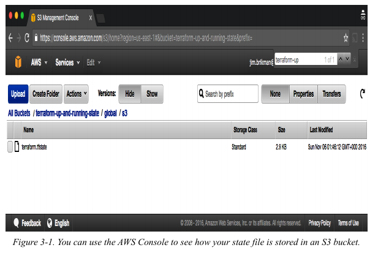
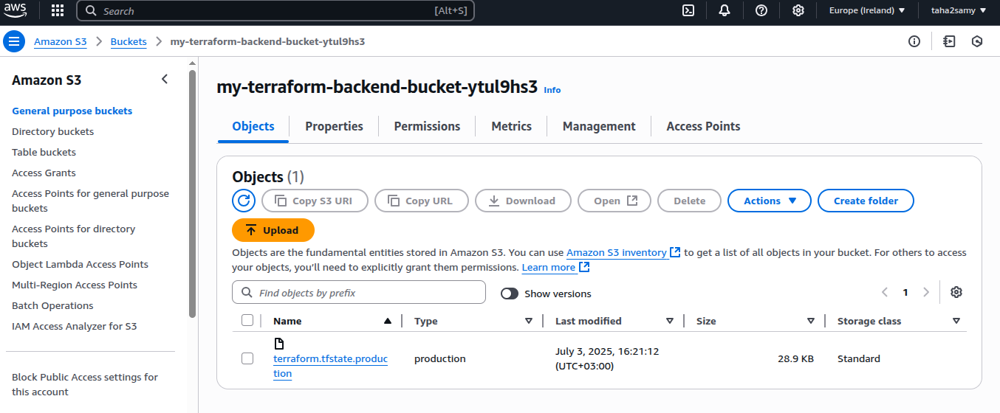
لما الـ backend ده بيبقى enabled، Terraform هيعمل pull لأحدث state من الـ S3 bucket ده بشكل أوتوماتيكي قبل ما يشغل أي command، وهيعمل push لأحدث state للـ S3 bucket برضه بشكل أوتوماتيكي بعد ما الـ command يخلص.
عشان تشوف ده وهو بيحصل، ضيف الـ output variables دي:
xxxxxxxxxxoutput "s3_bucket_arn" { value = aws_s3_bucket.terraform_state.arn description = "The ARN of the S3 bucket"}
output "dynamodb_table_name" { value = aws_dynamodb_table.terraform_locks.name description = "The name of the DynamoDB table"}الـ variables دي هتطبع الـ Amazon Resource Name (ARN) بتاع الـ S3 bucket بتاعك، واسم الـ DynamoDB table بتاعتك. اعمل run لـ terraform apply عشان تشوف النتيجة:
xxxxxxxxxx$ terraform apply(...)Acquiring state lock. This may take a few moments...aws_dynamodb_table.terraform_locks: Refreshing state...aws_s3_bucket.terraform_state: Refreshing state...
Apply complete! Resources: 0 added, 0 changed, 0 destroyed.Releasing state lock. This may take a few moments...
Outputs:
dynamodb_table_name = "terraform-up-and-running-locks"s3_bucket_arn = "arn:aws:s3:::terraform-up-and-running-state"لاحظ إزاي Terraform دلوقتي بقى بياخد lock قبل ما يشغل apply وبيسيب الـ lock بعد ما يخلص!
دلوقتي، روح على الـ S3 console تاني، اعمل refresh للصفحة، ودوس على زرار Show الرمادي اللي جنب Versions. المفروض دلوقتي تشوف كذا version من فايل الـ terraform.tfstate بتاعك في الـ S3 bucket، زي ما هو موضح في Figure 3-2.
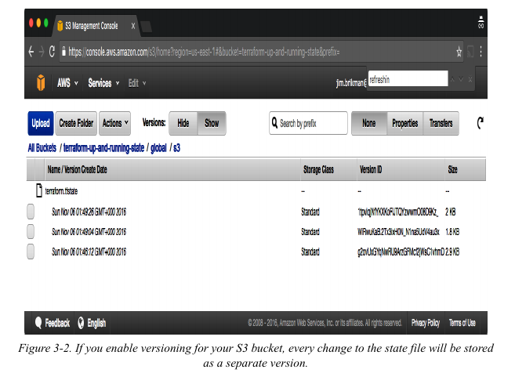
ده معناه إن Terraform بيعمل push و pull للـ state data أوتوماتيك من وإلى S3، وإن S3 بيخزن كل revision للـ state file.
ودي حاجة مفيدة جداً في الـ debugging، وإنك تقدر تعمل roll back لـ versions أقدم لو حصلت أي مشكلة.
القصور او Limitations في الـ Backends بتاعة Terraform
الـ backends بتاعة Terraform فيها شوية قصور ونقط لازم تاخد بالك منها.
أول مشكلة هي "مشكلة البيضة والفرخة" اللي بتقابلك لما تيجي تستخدم Terraform عشان تعمل create للـ S3 bucket اللي إنت أصلاً عايز تخزن فيه الـ Terraform state بتاعك. عشان تحل المشكلة دي، اضطرينا نمشي على عملية من خطوتين:
تكتب كود
Terraformعشان تعملcreateللـS3 bucketوالـDynamoDB table، وتعملdeployللكود ده وانت بتستخدمlocal backend.ترجع تاني لكود
Terraform، وتضيفremote backend configurationعشان تستخدم الـS3 bucketوالـDynamoDB tableاللي لسه عاملينلهمcreate، وبعدين تشغلterraform initعشان تنسخ الـlocal stateبتاعك لـS3.
ولو حبيت في أي وقت تمسح الـ S3 bucket والـ DynamoDB table دول، هتحتاج تعمل نفس العملية اللي من خطوتين دي بس بالعكس:
تروح لكود
Terraform، تشيل الـbackend configuration، وتشغلterraform initمن تاني عشان ترجع الـTerraform stateتاني للـlocal diskبتاعك.تشغل
terraform destroyعشان تمسح الـS3 bucketوالـDynamoDB table.
العملية اللي من خطوتين دي رخمة شوية، بس الخبر الكويس إنك ممكن تستخدم نفس الـ S3 bucket والـ DynamoDB table لكل كود Terraform بتاعك، فغالباً هتحتاج تعملها مرة واحدة بس (أو مرة لكل AWS account لو عندك كذا حساب). بعد ما الـ S3 bucket يتعمل، في باقي كود الـ Terraform بتاعك، تقدر تحدد الـ backend configuration من أول لحظة من غير أي خطوات زيادة.
المشكلة التانية مؤلمة أكتر: الـ backend block في Terraform مش بيسمحلك تستخدم أي variables أو references. الكود اللي جاي ده مش هيشتغل:
xxxxxxxxxx# ده مش هيشتغل. الـ Variables مش مسموح بيها في الـ backend configuration.terraform { backend "s3" { bucket = var.bucket region = var.region dynamodb_table = var.dynamodb_table key = "example/terraform.tfstate" encrypt = true }}ده معناه إنك محتاج تعمل copy-paste للاسم بتاع الـ S3 bucket والـ region واسم الـ DynamoDB table وغيره، في كل Terraform module عندك.
(هنتعلم كل حاجة عن الـ Terraform modules في Chapter 4 و 8؛ دلوقتي، كفاية إنك تفهم إن الـ modules هي طريقة تنظم بيها كود Terraform وتعيد استخدامه، وإن الشغل الحقيقي بيبقى متقسم لـ modules صغيرة كتير).
الأسوأ من كده، إنك لازم تاخد بالك أوي ومتعملش copy-paste لقيمة الـ key، بالعكس، لازم تتأكد إن كل component في كل env بتعمله deploy ليه key مختلف ومميز عشان متعملش overwrite بالغلط على الـ state بتاع module تاني! إنك تضطر تعمل copy-paste كتير وتغييرات يدوية كتير ده بيفتح باب كبير للغلط، خصوصاً لو محتاج تعمل deploy و manage لـ Terraform component كتير في environments مختلفة.
Important
نفهم مفهوم component انت تقسم الـenv بتاعك على اكثر من directory بحيث مثلا كل اعدادات الشبكة زي vpc , subnets و غيره فى directory لوحده دا مفهوم للـisolation اعلى شوية من مفهوم العزل على مستوى envs زي كده 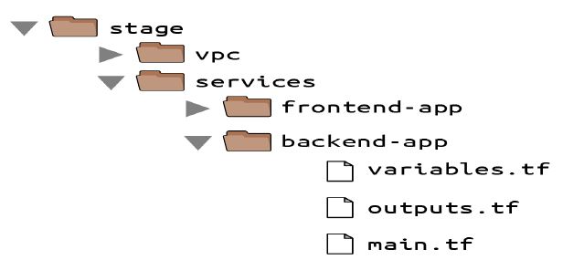
زي كده frontend في فولدر و backend فى فولدر المقصود بكده infrastructure بتاع كل واحد فيهم انت مضطر تروح تعمل cop-paste للـhcl وتزبط key زي قولت ودي عملية يدوية وممكن يحصل غلط هنا بيجي دور terragrunt بس سؤال ازاي اخد معلومات مثلا من Backend محتاجه فى frontend دي فى اخر الفصل مشروحه
أحد الحلول عشان تقلل الـ copy-paste هو إنك تستخدم حاجة اسمها partial configurations.
الفكرة إنك بتشيل parameters معينة من الـ backend configuration في الكود بتاعك، وبتباصيها كـ command-line arguments عن طريق -backend-config لما بتشغل terraform init.
مثلاً، ممكن تاخد الـ arguments المتكررة زي bucket و region، وتحطهم في فايل لوحده اسمه backend.hcl:
xxxxxxxxxx# backend.hclbucket = "terraform-up-and-running-state"region = "us-east-2"dynamodb_table = "terraform-up-and-running-locks"encrypt = trueالـ parameter الوحيد اللي بيفضل في كود Terraform هو الـ key، لأنك لسه محتاج تظبط قيمة key مختلفة لكل module:
Partial configuration. باقي الـ settings (زي bucket, region)
هتتباصى من فايل عن طريق -backend-config arguments لـ 'terraform init'
xxxxxxxxxxterraform { backend "s3" { key = "example/terraform.tfstate" }}عشان تجمع الـ partial configurations بتاعتك مع بعض، شغل terraform init مع الـ argument اللي اسمه -backend-config:
xxxxxxxxxx$ terraform init -backend-config=backend.hclTerraform بيعمل merge للـ partial configuration اللي في backend.hcl مع الـ partial configuration اللي في كود Terraform بتاعك عشان يكون الـ full configuration اللي الـ module بتاعك بيستخدمها. ممكن تستخدم نفس الفايل backend.hcl مع كل الـ modules بتاعتك، وده بيقلل التكرار بشكل كبير جداً؛ بس برضه هتفضل محتاج تظبط قيمة key مختلفة لكل module بنفسك.
Tip
على فكرة عادي تحط key في ملفات hcl بتحصل عادي وهو بيفهم انه من ضمن backend بس لما يكون عندك كذا module محتاج تغير ده في كل ملف hcl هتحطه فى module وانت ودماغك
انا ذات نفسي بخلي انشاء الملف ده يحصل اتوامتك عادي وجدا زي كده
xxxxxxxxxx
variable "region" { description = "The AWS region to deploy resources in" default = "eu-west-1" type = string}
provider "aws" { region = var.region
}
resource "random_string" "random" { length = 8 special = false upper = false
}
resource "aws_s3_bucket" "backend_bucket" { bucket = "my-terraform-backend-bucket-${random_string.random.result}" force_destroy = true
}resource "aws_s3_bucket_public_access_block" "public_access" { bucket = aws_s3_bucket.backend_bucket.id
block_public_acls = true block_public_policy = true ignore_public_acls = true restrict_public_buckets = true
}resource "aws_s3_bucket_server_side_encryption_configuration" "s3_encryption" { bucket = aws_s3_bucket.backend_bucket.id
rule { apply_server_side_encryption_by_default { sse_algorithm = "AES256" } }
}resource "aws_s3_bucket_versioning" "enable" { bucket = aws_s3_bucket.backend_bucket.id versioning_configuration { status = "Enabled" }}resource "aws_dynamodb_table" "terraform_locks" { name = "backend_locks-${random_string.random.result}" billing_mode = "PAY_PER_REQUEST" hash_key = "LockID"
attribute { name = "LockID" type = "S" }
}resource "local_file" "backend_config" {content = <<EOFbucket = "${aws_s3_bucket.backend_bucket.bucket}"region = "${var.region}"encrypt = truekey = "terraform.tfstate.production"dynamodb_table = "${aws_dynamodb_table.terraform_locks.name}"EOF
filename = "./production_backend_config.hcl"}ممكن تكون محتاج اكثر من ملف لاكثر من module ساعته هتحتاج تعمل loops لسه هنشوفه فى الفصل الخامس
لان لازم كل واحد ليه key مخلتف
او تريح نفسك كل واحد وتحط key فى كل module فى ملفات terraform ودا الصح
طب السؤال ايه ليه سمى key بالاسم ده
xxxxxxxxxxexample/terraform.tfstate"
دي حتة مهمة قوي لما يكون عندك اكثر من Module واحد webserver وواحد للـdatabase .....وهكذا دلوقتي فى مشكلة لو كل واحد سمى key على مزاجه هتبقى نصيبة اعرف ده تبع مين وده تبع مين ازاي هنا يجي الحل حط Key بـrelative path يعني كأنه موجود داخل ملفات المشروع وتحطه بالـkey اللي يساوي نفس relative path بتاع terraform.tfstate لو كان local
بص هنا كمثال
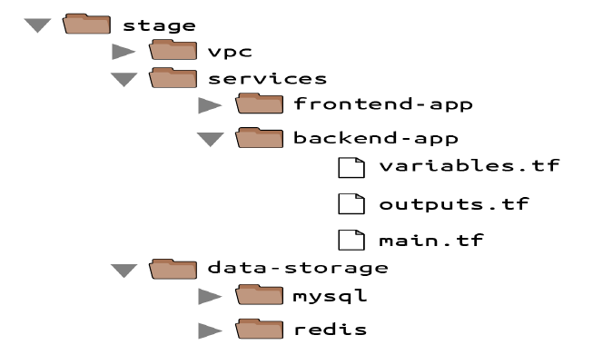
شوف لو كان terraform.tfstate موجود فى backend-app كا local هيكون شكله كده
xxxxxxxxxxstage/services.backend-app/terraform.tfstate
ببساطة خليه key فى s3 فى حالة بقى لما يكون remote backend عشان انت تعرف على طول هو تبع انهي Module سواء backend-app او frontend هي دي الفكرة مجرد تنظيم بس
حل تاني عشان تقلل الـ copy-paste هو إنك تستخدم Terragrunt، دي أداة open source بتحاول تسد شوية ثغرات موجودة في Terraform. Terragrunt بتساعدك تخلي الـ backend configuration بتاعتك كلها DRY (يعني Don’t Repeat Yourself)، عن طريق إنك بتعرّف كل الـ backend settings الأساسية (اسم الـ bucket، الـ region، اسم الـ DynamoDB table) في فايل واحد، وهي أوتوماتيك بتظبط الـ key إنه يبقى الـrealtive path للفولدر بتاع الـ module.
هنشوف مثال إزاي نستخدم Terragrunt في Chapter 10.
State File Isolation
بوجود الـ remote backend والـ locking، الشغل كـ team مبقاش فيه مشكلة. بس لسه فاضل مشكلة كمان: الـ isolation.
في الأول لما بتبدأ تستخدم Terraform، ممكن تلاقي نفسك عايز تعرّف كل الـ infrastructure بتاعتك في Terraform file واحد، أو في مجموعة Terraform files في فولدر واحد. المشكلة في الطريقة دي إن كل الـ Terraform state بتاعك هو كمان بيتخزن في فايل واحد، وأي غلطة في أي حتة ممكن تبوظ الدنيا كلها.
مثلاً، وانت بتحاول تعمل deploy لـ version جديدة من الأبلكيشن بتاعك على الـ staging، ممكن تبوظ الأبلكيشن اللي على الـ production. أو الأسوأ من كده، إنك ممكن تعمل corrupt للـ state file بتاعك كله، يا إما عشان مستخدمتش locking أو بسبب bug نادر في Terraform، وساعتها كل الـ infrastructure بتاعتك في كل الـ environments هتبوظ.
الفكرة كلها من وجود environments منفصلة هي إنها تكون isolated عن بعضها. فلو إنت بتعمل manage لكل الـ environments من مجموعة Terraform configurations واحدة، يبقى إنت كده بتكسر الـ isolation ده.
بالظبط زي ما السفينة بيكون فيها bulkheads (حواجز) بتمنع إن تسريب في جزء يغرق السفينة كلها، إنت كمان لازم يكون عندك bulkheads في تصميم الـ Terraform بتاعك، زي ما هو واضح في Figure 3-3.

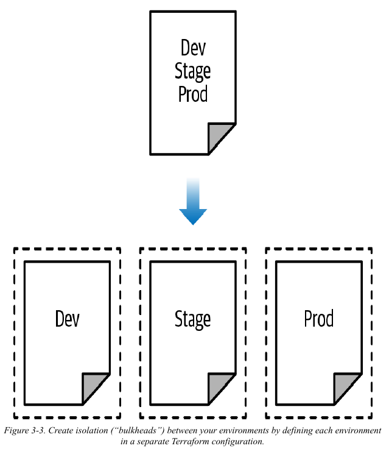
زي ما Figure 3-3 بيوضح، بدل ما تعرّف كل الـ environments بتاعتك في مجموعة Terraform configurations واحدة (الجزء اللي فوق)، الصح إنك تعرّف كل environment في مجموعة configurations منفصلة (الجزء اللي تحت)، بحيث إن أي مشكلة في environment معينة تكون معزولة تماماً عن الباقي.
فيه طريقتين تقدر تعمل بيهم isolate للـ state files:
الـ
Isolationعن طريق الـworkspaces
ودي مفيدة للـtestsالسريعة والمنفصلة على نفس الـconfiguration.الـ
Isolationعن طريق الـfile layout
ودي مفيدة في حالات الـproductionاللي بتحتاج فيهاseparationقوي بين الـenvironments.
خلينا نتكلم بالتفصيل عن كل واحدة منهم في الجزئين اللي جايين.
الـ Isolation عن طريق الـ Workspaces
الـ Terraform workspaces بتخليك تخزن الـ Terraform state بتاعك في كذا workspace منفصل وليه اسم معين. Terraform بيبدأ بـ workspace واحد بس اسمه default، ولو إنت عمرك ما حددت workspace معين بشكل صريح، يبقى الـ default workspace هو اللي هتفضل تستخدمه طول الوقت.
عشان تعمل create لـ workspace جديد أو تبدل ما بين الـ workspaces، بتستخدم الأوامر بتاعة terraform workspace. خلينا نجرب الـ workspaces دي على كود Terraform بيعمل deploy لـ EC2 Instance واحدة:
xxxxxxxxxxresource "aws_instance" "example" { ami = "ami-0c55b159cbfafe1f0" # Amazon Linux 2 AMI instance_type = "t2.micro"}اعمل configure لـ backend للـ Instance دي، باستخدام الـ S3 bucket والـ DynamoDB table اللي عملناهم create قبل كده في الشابتر ده، بس خلي الـ key متظبط على workspaces-example/terraform.tfstate:
xxxxxxxxxxterraform { backend "s3" {
bucket = "terraform-up-and-running-state" key = "workspaces-example/terraform.tfstate" region = "us-east-2"
dynamodb_table = "terraform-up-and-running-locks" encrypt = true }}اعمل run لأمر terraform init و terraform apply عشان تعمل deploy للكود ده:
xxxxxxxxxx$ terraform initInitializing the backend...
Successfully configured the backend "s3"! Terraform will automaticallyuse this backend unless the backend configuration changes.
Initializing provider plugins...(...)Terraform has been successfully initialized!
$ terraform apply(...)Apply complete! Resources: 1 added, 0 changed, 0 destroyed.الـ state بتاع الـ deployment ده متخزن في الـ default workspace. تقدر تتأكد من كده بإنك تشغل أمر terraform workspace show، اللي هيقولك إنت في أنهي workspace حالياً:
xxxxxxxxxx$ terraform workspace showdefaultالـ default workspace بيخزن الـ state بتاعك في نفس المكان اللي إنت حددته بالظبط في الـ key. زي ما هو واضح في Figure 3-4، لو بصيت في الـ S3 bucket بتاعك، هتلاقي فايل terraform.tfstate موجود جوه فولدر workspaces-example.
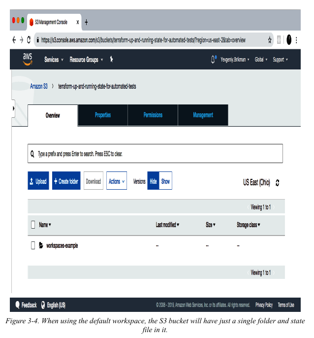
لما جرب دا اللي ظهر معايا default كان في ملف لوحدة فى اول s3 اما باقي workspaces كان فى folder اسممه env./ s زي مابين فى الصورة
xxxxxxxxxx$ terraform workspace new example1Created and switched to workspace "example1"!
You're now on a new, empty workspace. Workspaces isolate their state,so if you run "terraform plan" Terraform will not see any existing statefor this configuration.دلوقتي، خد بالك إيه اللي هيحصل لو حاولت تشغل terraform plan:
xxxxxxxxxx$ terraform planTerraform will perform the following actions:
# aws_instance.example will be created + resource "aws_instance" "example" { + ami = "ami-0c55b159cbfafe1f0" + instance_type = "t2.micro" (...) }
Plan: 1 to add, 0 to change, 0 to destroy.Terraform عايز يعمل create لـ EC2 Instance جديدة خالص من الصفر! ده لأن الـ state files في كل workspace معزولة عن بعضها، وبما إنك دلوقتي في الـ workspace اللي اسمه example1، Terraform مش بيستخدم الـ state file بتاع الـ default workspace، وبالتالي مش شايف إن الـ EC2 Instance اتعملت create هناك أصلاً.
جرب تشغل terraform apply عشان تعمل deploy للـ EC2 Instance التانية دي في الـ workspace الجديد:
xxxxxxxxxx$ terraform apply(...)Apply complete! Resources: 1 added, 0 changed, 0 destroyed.كرر نفس الموضوع مرة كمان واعمل create لـ workspace تالت اسمه example2:
xxxxxxxxxx$ terraform workspace new example2Created and switched to workspace "example2"!
You're now on a new, empty workspace. Workspaces isolate their state,so if you run "terraform plan" Terraform will not see any existing statefor this configuration.شغل terraform apply تاني عشان تعمل deploy لـ EC2 Instance تالتة:
xxxxxxxxxx$ terraform apply(...)Apply complete! Resources: 1 added, 0 changed, 0 destroyed.دلوقتي بقى عندك تلاتة workspaces متاحين، تقدر تشوفهم باستخدام أمر terraform workspace list:
xxxxxxxxxx$ terraform workspace list default example1* example2وتقدر تبدل بينهم في أي وقت باستخدام أمر terraform workspace select:
xxxxxxxxxx$ terraform workspace select example1Switched to workspace "example1".عشان تفهم إزاي ده بيشتغل under the hood (يعني في الكواليس)، بص تاني في الـ S3 bucket بتاعك؛ المفروض دلوقتي تشوف فولدر جديد اسمه env:، زي ما هو واضح في Figure 3-5.
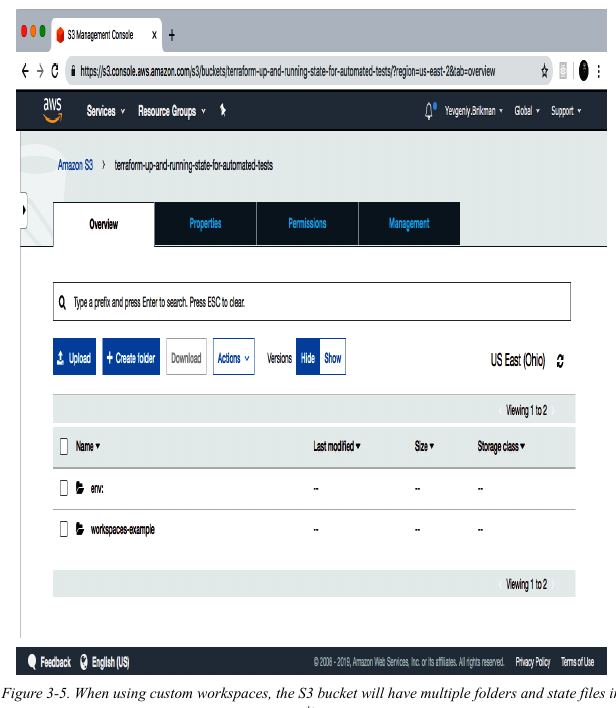
جوه الفولدر اللي اسمه env:، هتلاقي فولدر لكل workspace من اللي عندك، زي ما هو واضح في Figure 3-6.
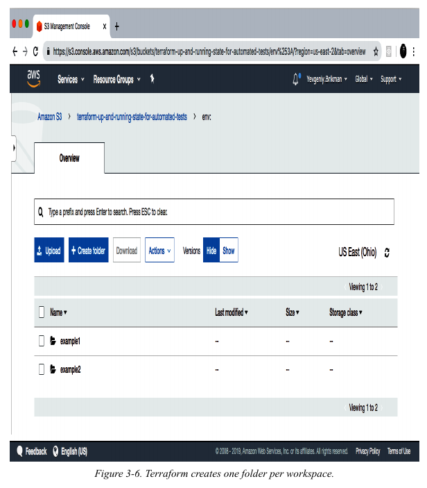
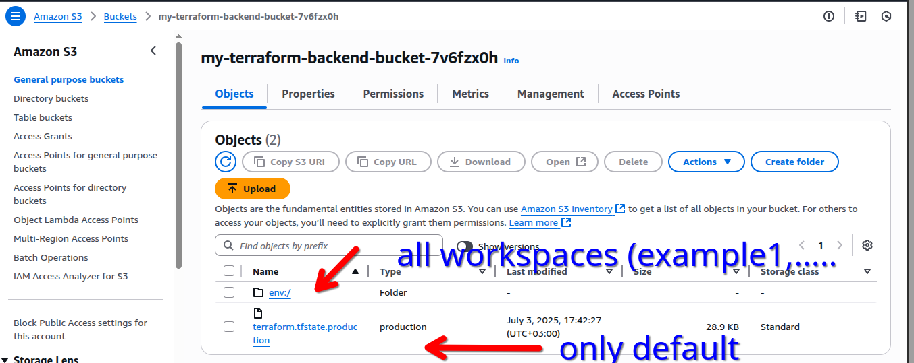
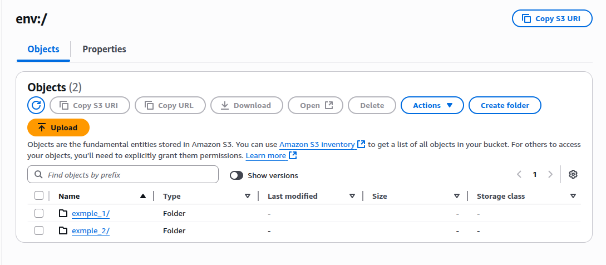
خد بالك دا معناها ان كل workspace ليه ملف state لوحده مختلف عن ثاني كانك حطيط كل واحد فى فولدر مستقل وكل واحد ليه fstate خاص بيه
خلينا نعمل create لـ workspace جديد اسمه example1 باستخدام أمر terraform workspace new:
Warning
انا هنا مش تبع تسمية key الـ standerd بس عادي مش
جوه كل workspace من دول، Terraform بيستخدم الـ key اللي أنت حددته في الـ backend configuration بتاعتك. عشان كده المفروض تلاقي عندك
example1/workspaces-example/terraform.tfstate
و example2/workspaces-example/terraform.tfstate.
بمعنى تاني، إنك تعمل switch لـ workspace مختلف هو هو بالظبط كأنك غيرت الـ path اللي الـ state file بتاعك متخزن فيه.
دي حاجة مفيدة جداً لما يكون عندك Terraform module معموله deploy خلاص، وعايز تجرب فيه شوية حاجات (زي مثلاً إنك تحاول تعمل refactor للكود)، بس في نفس الوقت مش عايز التجارب بتاعتك دي تأثر على الـ state بتاع الـ infrastructure اللي معمولة deploy بالفعل. الـ Terraform workspaces بتسمحلك تعمل run لأمر terraform workspace new وتعمل deploy لنسخة جديدة طبق الأصل من نفس الـ infrastructure، بس بتخزن الـ state بتاعها في file منفصل لوحده.
في الحقيقة، أنت ممكن كمان تغير الطريقة اللي الـ module ده بيتصرف بيها على حسب الـ workspace اللي أنت فيه، عن طريق إنك تقرا اسم الـ workspace باستخدام الـ expression ده: terraform.workspace. كمثال، دي طريقة تخلي الـ Instance type يبقى t2.medium في الـ default workspace ويبقى t2.micro في أي workspace تاني (عشان توفر فلوس مثلاً وانت بتجرب):
Note
refactor المقصود به اعادة هيكلة او بتستخدام مثلا storage مختلف تشوف اداءه يستحق ولا ء فالفكرة انت عيز تجرب ومش عايز يكون فى بيئة producation فبتعمل كده فى بيئة testing وبتشوف نفع كان به وترجع لبيئة producation وطبق طب لو منفعش انت مش خسران حاجة مفيش حاجة اثرة معاك فى producation تقدر عن طريق control version ترجع وقضي الامر
xxxxxxxxxxresource "aws_instance" "example" { ami = "ami-0fb653ca2d3203ac1" instance_type = terraform.workspace == "default" ? "t2.medium" : "t2.micro"}Note
الكود اللي فات بيستخدم ternary syntax عشان يظبط instance_type بشكل شرطي (conditionally) يا إما لـ t2.medium أو t2.micro، على حسب قيمة terraform.workspace.
هتشوف التفاصيل الكاملة للـ ternary syntax والـ conditional logic في Terraform في الفصل الخامس.
فى طرق عشان تعمل الحاجة دي تغير سلوك resource بناءا على workspace هنشوف هنعمل دا ازاي وبطرق اكثر تنظيما وسلاسة
الكود اللي فات ده بيستخدم حاجة اسمها ternary syntax عشان يحدد قيمة الـ instance_type بشكل شرطي، يا إما t2.medium أو t2.micro، على حسب قيمة terraform.workspace. أنت هتشوف التفاصيل الكاملة للـ ternary syntax والـ conditional logic في Terraform في الفصل الخامس.
الـ Terraform workspaces ممكن تكون طريقة ممتازة عشان تعمل spin up و tear down لـ versions مختلفة من الكود بتاعك بسرعة، بس فيها شوية عيوب (drawbacks):
Tip
Spin up: دي معناها إنك بتِقوّم أو بتشغل الـ infrastructure. يعني بتعمل create للـ resources (زي السيرفرات مثلاً) وتخليها جاهزة وموجودة online عشان تبدأ تستخدمها.
Tear down: ودي عكسها تماماً. معناها إنك بتهدّ أو بتمسح الـ infrastructure دي خالص. بتعمل destroy لكل الـ resources اللي كنت عملتلها spin up عشان متفضلش شغالة وتصرف فلوس على الفاضي.
الـ
state filesبتاعت كل الـworkspacesبتتخزن في نفس الـbackend(يعني مثلاً في نفس الـS3 bucket). ده معناه إنك بتستخدم نفس الـauthenticationوالـaccess controlsلكل الـworkspaces، وده سبب من الأسباب الرئيسية اللي بتخلي الـworkspacesمش طريقة كويسة عشان تعملisolatingللـenvironmentsعن بعضها (زي مثلاً تفصل الـstagingعن الـproduction).
الـ
Workspacesمش بتبقى ظاهرة في الكود أو على الـterminalإلا لو عملتrunلأوامرterraform workspace. لما تبص على الكود، أيmoduleمعمولهdeployفيworkspaceواحد بيبان شكله هو هو بالظبط زيmoduleتاني معمولهdeployفي 10workspaces. ده بيخلي الـmaintenanceأصعب، لإنك مش بيبقى عندك صورة واضحة للـinfrastructureبتاعتك, المشكلة دي اسمها Code blindsلما نحط النقطتين اللي فاتوا دول على بعض، النتيجة هي إن الـ
workspacesممكن تكونerror proneجداً (يعني سهل تغلط فيها). عدم الوضوح ده بيخلي سهل إنك تنسى أنت في أنهيworkspaceوتعملdeployللتغييرات في مكان غلط بالغلط (زي مثلاً إنك بالصدفة تعملrunلأمرterraform destroyفي الـworkspaceبتاع الـproductionبدل الـstaging). ولإنك لازم تستخدم نفس الـauthenticationلكل الـworkspaces، فمفيش عندك أيlayers of defenseتانية تحميك من غلطات زي دي.
بسبب العيوب دي، الـ workspaces مش وسيلة مناسبة عشان تعمل isolating لـ environment عن التانية، زي مثلاً إنك تفصل الـ staging عن الـ production. عشان تاخد isolation مظبوط بين الـ environments، بدل الـ workspaces، أنت غالباً هتحتاج تستخدم طريقة الـ file layout، وده موضوع الجزء اللي جاي.
قبل ما نكمل، اتأكد إنك تمسح الـ 3 EC2 Instances اللي لسه عاملين ليهم deploy، وده عن طريق إنك تعمل run لأمر terraform workspace select <name> وبعدها terraform destroy في كل workspace من التلاتة.
الـ Isolation عن طريق الـ File Layout
عشان توصل لـ isolation كامل بين الـ environments، أنت محتاج تعمل الآتي:
تحط الـ
Terraform configuration filesبتاعت كلenvironmentفي فولدر منفصل. كمثال، كل الـconfigurationsبتاعت الـstaging environmentممكن تبقى في فولدر اسمهstageوكل الـconfigurationsبتاعت الـproduction environmentتبقى في فولدر اسمهprod.تعمل
configureلـbackendمختلف لكلenvironment، وتستخدمauthentication mechanismsوaccess controlsمختلفة. يعني مثلاً، كلenvironmentممكن تبقى فيAWS accountمنفصل لوحدها وليهاS3 bucketمنفصل كـbackend.
بالطريقة دي، استخدام فولدرات منفصلة بيخلي الموضوع أوضح بكتير أنت بتعمل deploy في أنهي environment. واستخدام state files منفصلة، ومعاها authentication mechanisms منفصلة، بيخلي احتمالية إن أي لخبطة تحصل في environment معينة تأثر على التانية أقل بكتير.
في الحقيقة، أنت ممكن تاخد مفهوم الـ isolation ده لأبعد من مجرد الـ environments وتنزِل بيه لحد مستوى الـ "component". الـ component هنا هو عبارة عن مجموعة من الـ resources اللي أنت عادةً بتعملها deploy مع بعض.
Note
تخيل إنك بتبني سيستم كامل فيه VPC (الشبكة)، و database، و web-app. بدل ما تحط كل دول في ملف Terraform واحد، هتقسمهم بالشكل ده:
الشكل العام للمشروع (الـ Tree Structure):
xxxxxxxxxxinfrastructure/├── staging/│ ├── vpc/│ │ ├── main.tf│ │ └── terraform.tfstate (State بتاع الـ VPC بس في الـ Staging)│ ││ ├── database/│ │ ├── main.tf│ │ └── terraform.tfstate (State بتاع الـ Database بس في الـ Staging)│ ││ └── web-app/│ ├── main.tf│ └── terraform.tfstate (State بتاع الـ Web App بس في الـ Staging)│└── production/├── vpc/│ ├── main.tf│ └── terraform.tfstate (State بتاع الـ VPC بس في الـ Production)│├── database/│ ├── main.tf│ └── terraform.tfstate (State بتاع الـ Database بس في الـ Production)│└── web-app/├── main.tf└── terraform.tfstate (State بتاع الـ Web App بس في الـ Production)
شرح الـ Tree دي:
التقسيم على مستوى الـ
Environment:عندنا فولدرين أساسيين:
stagingوproduction. ده بيضمن إن أي تغييرات هتحصل في الـstagingمش هتأثر أبداً على الـproductionعشان كل واحد فيهم ليه فولدراته الخاصة.
التقسيم على مستوى الـ
Component:جوه كل
environment(زيstagingمثلاً)، قسمنا الشغل لـcomponentsمنطقية:vpc/: ده الـcomponentالمسئول عن الشبكة بس (VPC,Subnets,Route Tables.. إلخ). ده نادرًا ما بيتغير.database/: ده الـcomponentالمسئول عن قاعدة البيانات (RDS instance,Security Groups.. إلخ).web-app/: ده الـcomponentبتاع الأبلكيشن نفسه (EC2 instances,Load Balancer.. إلخ). ده أكتر حاجة بتتغير.
ليه التقسيمة دي كويسة؟
Isolationقوي: كلcomponentفي كلenvironmentليه الـstate fileبتاعه. فلو أنت بتعدل في الـweb-appبتاع الـstaging، مستحيل بالغلط تبوظ الـVPCأو الـdatabaseحتى لو في نفس الـenvironment.أمان: لو حصل
destroyبالغلط، هيمسحcomponentواحد بس (زي الـweb-app) مش السيستم كله.سرعة: لما تيجي تعمل
terraform planأوapply،Terraformهيبص على عدد قليل من الـresources(بتاعة الـcomponentده بس)، فبيبقى أسرع بكتير.
كمثال، بعد ما بتظبط الـ network topology الأساسية للـ infrastructure بتاعتك — أو زي ما بنقولها
بالـ AWS lingo: الـ Virtual Private Cloud (VPC) وكل الـ subnets والـ routing rules والـ VPNs والـ network ACLs اللي تبعها — أنت غالبًا هتغيرها مرة كل كام شهر بالكتير. على الناحية التانية، أنت ممكن تعمل deploy لـ version جديدة من web server كذا مرة في اليوم الواحد. لو أنت بتعمل manage للـ infrastructure بتاعت الـ VPC component والـ web server component في نفس مجموعة الـ Terraform configurations، يبقى أنت كده بتعرّض الـ network topology بتاعتك كلها لخطر إنها تبوظ (مثلاً بسبب typo بسيط في الكود أو حد بالغلط عمل run لكوماند غلط) كذا مرة في اليوم بدون أي داعي.
Tip
الـ AWS Lingo هو مصطلح عامي بيتقال على مجموعة الأسماء والمصطلحات الخاصة اللي شركة AWS بتستخدمها عشان توصف الخدمات بتاعتها. كل خدمة سحابية ليها "لغة" أو lingo خاصة بيها، و AWS ليها أشهر lingo في السوق.
مثال: بدل ما نقول "سيرفر"، في AWS lingo بنقول EC2 Instance. بدل ما نقول "object storage"، بنقول S3 Bucket. وبدل ما نقول "virtual network"، بنقول VPC.
فالمقصود بالجملة دي هو "زي ما بنسميها بلغة AWS" أو "بالمصطلحات اللي AWS بتستخدمها". فهم الـ lingo ده ضروري لأي حد بيشتغل على AWS cloud.
عشان كده، أنا بنصح إنك تستخدم Terraform folders منفصلة (وبالتالي state files منفصلة) لكل environment (زي staging, production, وغيرهم) ولكل component (زي VPC, services, databases) جوه الـ environment دي. وعشان نشوف ده شكله إيه على أرض الواقع، خلينا نمشي على الـ file layout اللي بنصح بيه للـ Terraform projects.
شكل 3-7 بيوضح الـ file layout اللي أنا بستخدمه في أي Terraform project عادةً.
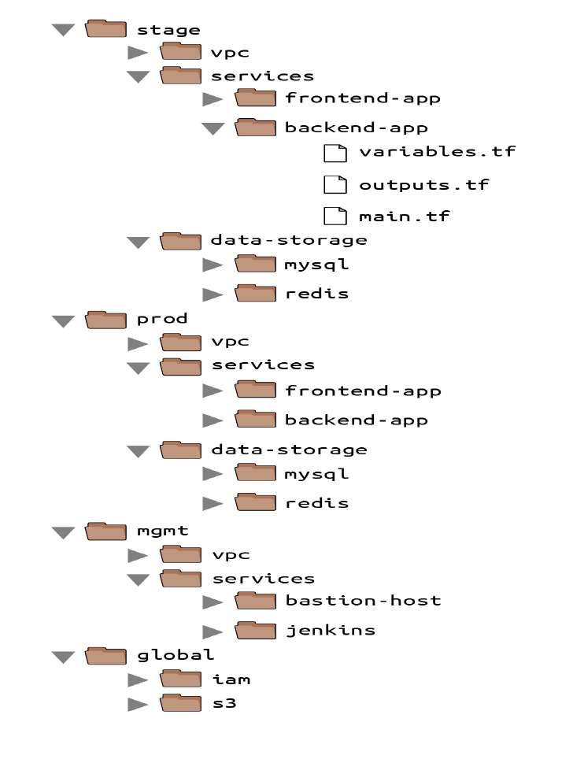
على أعلى مستوى، فيه فولدرات منفصلة لكل environment. الـ environments بالظبط بتختلف من مشروع للتاني، بس أشهرهم هما دول:
stageدهenvironmentللحاجات اللي قبل الـproduction(يعني للـtesting).prodدهenvironmentللحاجات الـproduction(يعني الأبلكيشنز اللي الـusersبيستخدموها).mgmtدهenvironmentللـDevOps tooling(زي الـbastion hostأو الـCI server).globalده مكان تحط فيه الـresourcesاللي كل الـenvironmentsبتستخدمها (زيS3أوIAM).Note
s3 اللي مقصوده هنا هي الخاصة بي backend المفروض تكون مشتركة
جوه كل environment، فيه فولدرات منفصلة لكل component. الـ components برضه بتختلف من مشروع للتاني، بس أشهرهم هما دول:
vpcالـnetwork topologyبتاعة الـenvironmentدي.servicesالأبلكيشنز أو الـmicroservicesاللي هتشتغل في الـenvironmentدي، زي مثلاًfrontendمعمول بـRuby on Railsأوbackendمعمول بـScala. وكل أبلكيشن ممكن كمان يبقى ليه الفولدر الخاص بيه عشان تفصله عن باقي الأبلكيشنز.
data-storageالـdata storesاللي هتشتغل في الـenvironmentدي، زيMySQLأوRedis. وكلdata storeممكن يبقى ليه الفولدر الخاص بيه عشان تفصله عن باقي الـdata stores.
Note
هنا حط الحجات الخاصة بيـnetwork topology سواء subnet ولا acl وغيرها الهدف ان لو باظ state file فى واحد ميأثرش على الباقي وبينظم الشغل وبيخلي كل واحد عارف دوره فى team
وجوه كل component، هنلاقي بقى الـ Terraform configuration files نفسها، ودي بتكون مترتبة حسب أسماء متفق عليها (naming conventions) زي كده:
variables.tfالـInput variables.outputs.tfالـOutput variables.backend.tfاد بتحط فيه backend الخاص بterraform سواء كان local او terraform
main.tfالـResourcesوالـdata sources.
لما بتعمل run لـ Terraform، هو ببساطة بيدور على أي ملفات في الفولدر الحالي آخرها .tf، فمن ناحيته أنت ممكن تسمي الملفات أي اسم يعجبك. بس خد بالك، يمكن Terraform ميهتمش بأسماء الملفات، بس زمايلك في الفريق غالبًا هيهتموا. استخدام أسماء متوقعة وثابتة بيخلي الكود بتاعك سهل تصفحه: يعني مثلاً هتبقى عارف دايمًا تبص فين عشان تلاقي variable أو output أو resource.
لاحظ إن الـ convention اللي فاتت دي هي أقل convention المفروض تمشي عليها، لإن في كل استخدامات Terraform تقريبًا، بيبقى مفيد جدًا إنك تقدر توصل للـ input variables والـ output variables والـ resources بسرعة. بس أنت ممكن تزود على الـ convention دي. دي مجرد أمثلة:
dependencies.tfمن الشائع إنك تحط كل الـdata sourcesبتاعتك في ملف اسمهdependencies.tfعشان يبقى سهل تشوف الكود ده معتمد على إيه من بره.providers.tfممكن تحط الـprovider blocksبتاعتك في ملفproviders.tfعشان تقدر تشوف بلمحة سريعة الكود ده بيكلم أنهيprovidersوإيه الـauthenticationاللي هتحتاج توفره.main-xxx.tfلو ملف الـmain.tfبتاعك بقى طويل أوي لأنه فيه عدد كبير من الـresources، ممكن تقسمه لملفات أصغر بتجمع الـresourcesبطريقة منطقية. يعني مثلاًmain-iam.tfممكن يحتوي على كل الـIAM resources، وmain-s3.tfيحتوي على كل الـS3 resources، وهكذا. استخدام الـprefixاللي هوmain-بيخلي تصفح قايمة الملفات في الفولدر أسهل لما بتترتب أبجديًا، لإن كل الـresourcesهتتجمع تحت بعضها. ومن الجدير بالذكر برضه، لو لقيت نفسك بتعملmanageلعدد ضخم من الـresourcesوبتعاني عشان تقسمهم على ملفات كتير، دي ممكن تكون علامة إنك المفروض تقسم الكود بتاعك لـmodulesأصغر بدل كده، وده موضوع هنتكلم فيه بالتفصيل في الفصل الرابع.
دلوقتي، خلينا ناخد كود الـ web server cluster اللي كتبته في الفصل التاني، ومعاه كود الـ Amazon S3 والـ DynamoDB اللي كتبته في الفصل ده، ونعيد ترتيبهم باستخدام الـ folder structure اللي في شكل 3-8.
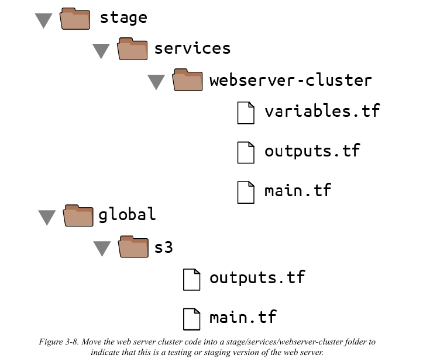
الـ S3 bucket اللي عملته في الفصل ده المفروض يتنقل للفولدر global/s3. انقل
الـ output variables (اللي هما s3_bucket_arn و dynamodb_table_name) لملف outputs.tf. وانت بتنقل الفولدر، خلي بالك كويس متنساش الفولدر المخفي (.terraform) وانت بتعمل copy للملفات في المكان الجديد عشان متضطرش تعمل reinitialize لكل حاجة من الأول.
الـ web server cluster اللي عملته في الفصل التاني المفروض يتنقل لـ stage/services/webserver-cluster (اعتبر دي نسخة الـ "testing" أو الـ "staging" من الـ web server cluster ده؛ أنت هتضيف نسخة "production" في الفصل اللي جاي). مرة تانية، اتأكد إنك تعمل copy لفولدر .terraform، وتنقل الـ input variables لملف variables.tf، والـ output variables لملف outputs.tf.
المفروض كمان تعمل update للـ web server cluster عشان يستخدم S3 كـ backend. ممكن تاخد الـ backend config من global/s3/main.tf وتعملها copy-paste زي ما هي تقريبًا، بس اتأكد إنك تغير الـ key عشان يبقى نفس الـ path بتاع فولدر كود الـ Terraform ده: stage/services/webserver-cluster/terraform.tfstate. ده بيديلك تطابق 1 لـ 1 بين شكل كود الـ Terraform بتاعك في الـ version control وبين الـ Terraform state files بتاعتك في S3، فبيبقى واضح جدًا إزاي الاتنين مرتبطين ببعض. الـ s3 module أصلًا بيظبط الـ key بالـ convention دي.
الـ file layout ده ليه مميزات كتير:
Clear code / environment layout(شكل واضح للكود والـ environment): سهل إنك تتصفح الكود وتفهم بالظبط إيه الـcomponentsاللي معمولةdeployفي كلenvironment.Isolation(العزل): الـlayoutده بيوفر قدر كويس من الـisolationبين الـenvironmentsوبين الـcomponentsجوه نفس الـenvironment، وده بيضمن إن لو حاجة باظت، الضرر يبقى محكوم على قد ما نقدر في جزء صغير بس من الـinfrastructureبتاعتك كلها.
من ناحية تانية، المميزات دي ممكن تعتبر عيوب برضه:
Working with multiple folders(الشغل مع فولدرات كتير): تقسيم الـcomponentsفي فولدرات منفصلة بيحميك من إنك تبوظ الـinfrastructureكلها بكوماند واحد بالغلط، بس في نفس الوقت بيمنعك من إنك تعملcreateللـinfrastructureكلها بكوماند واحد. يعني لو كل الـcomponentsبتاعتenvironmentواحدة كانت فيTerraform configurationواحد، كنت ممكن تعملspin upلـenvironmentكاملة بـcallواحدة لـterraform apply. لكن لو الـcomponentsفي فولدرات منفصلة، يبقى لازم تعملrunلـterraform applyفي كل فولدر لوحده.الحل: لو بتستخدم
Terragrunt، ممكن تعملrunللكوماندات على كذا فولدر في نفس الوقت باستخدام كوماندrun-all.Copy/paste: الـfile layoutالمشروح في الجزء ده فيه تكرار كتير. يعني مثلاً، نفس الـfrontend-appوالـbackend-appموجودين في فولدراتstageوprod.الحل: أنت في الحقيقة مش هتحتاج تعمل
copy-pasteلكل الكود ده! في الفصل الرابع، هتشوف إزاي تستخدمTerraform modulesعشان تخلي الكود ده كلهDRY(اختصار لـDon't Repeat Yourself، يعني متكررش نفسك).Resource dependencies(dependencies بين الـ Resources): تقسيم الكود على فولدرات كتير بيصعّب استخدام الـresource dependencies. لو كود الأبلكيشن بتاعك موجود في نفس الـTerraform configuration filesمع كود الـdatabase، كود الأبلكيشن كان هيقدر يوصل للـattributesبتاعت الـdatabaseمباشرة باستخدامattribute reference(زي إنه ياخد عنوان الـdatabaseعن طريقaws_db_instance.foo.address). لكن لو كود الأبلكيشن وكود الـdatabaseفي فولدرات مختلفة، زي ما أنا نصحت، مش هتقدر تعمل كده.الحل: فيه حل من اتنين. الأول إنك تستخدم
dependency blocksفيTerragruntزي ما هتشوف في الفصل العاشر. الحل التاني إنك تستخدم الـdata sourceاللي اسمهterraform_remote_state، وده اللي هنشرحه في الجزء الجاي.
الـ data source اللي اسمه terraform_remote_state
في الفصل التاني، أنت استخدمت الـ data sources عشان تجيب معلومات read-only من AWS، زي الـ aws_subnets اللي كان بيرجعلك list بالـ subnets اللي في الـ VPC بتاعتك. فيه data source تاني مفيد أوي لما بتتعامل مع الـ state: اسمه terraform_remote_state. أنت ممكن تستخدم الـ data source ده عشان تجيب الـ Terraform state file اللي متخزن عن طريق مجموعة تانية من الـ Terraform configurations.
خلينا ناخد مثال. تخيل إن الـ web server cluster بتاعك محتاج يكلم MySQL database. إنك تشغل database تكون scalable، وsecure، وdurable، وhighly available دي شغلانة كبيرة. مرة تانية، أنت ممكن تخلي AWS هي اللي تشيل الشغلانة دي عنك، المرة دي عن طريق إنك تستخدم خدمة Amazon اللي اسمها Relational Database Service (أو RDS)، زي ما هو واضح في شكل 3-9. خدمة RDS بتدعم أنواع databases كتير، زي MySQL، وPostgreSQL، وSQL Server، وOracle.
أنت ممكن متكونش عايز تعمل define للـ MySQL database في نفس مجموعة الـ configuration files بتاعت الـ web server cluster، لإنك هتعمل deploy لـ updates على الـ web server cluster أكتر بكتير، ومش عايز تاخد الـ risk إنك تبوظ الـ database بالغلط كل مرة بتعمل فيها كده.
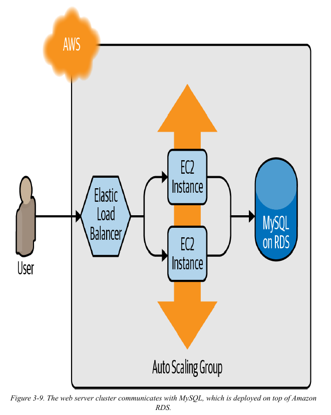
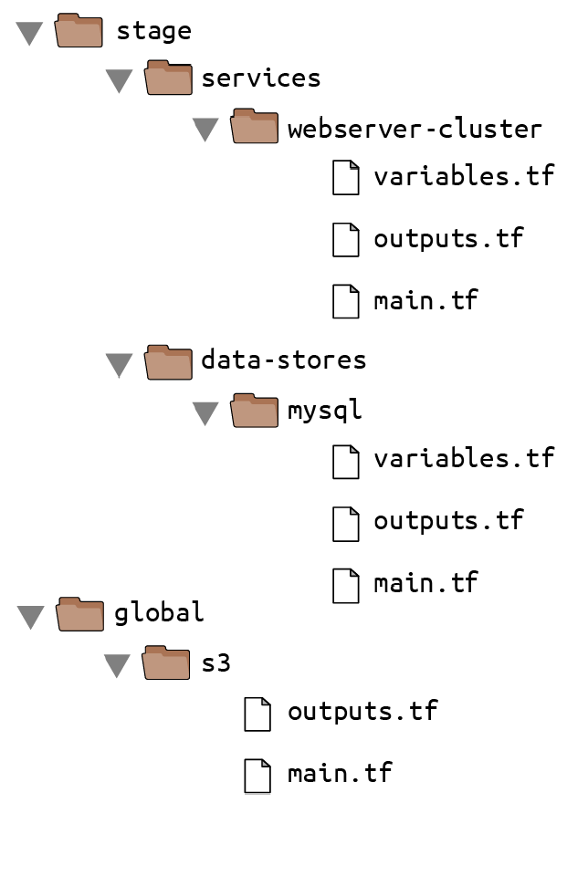
بعد كده، هنعمل الـ resources بتاعة الـ database في الملف
stage/data-stores/mysql/main.tf:
xxxxxxxxxxprovider "aws" { region = "us-east-2"}
resource "aws_db_instance" "example" { identifier_prefix = "terraform-up-and-running" engine = "mysql" allocated_storage = 10 instance_class = "db.t2.micro" skip_final_snapshot = true db_name = "example_database"
username = "???" password = "???"}في أول الملف، هتلاقي الـ provider block العادي، بس تحته على طول فيه resource جديد: aws_db_instance. الـ resource ده بيعمل create لـ database على RDS بالإعدادات دي:
MySQLكـdatabase engine.10 GBمساحة تخزين.Instanceمن نوعdb.t2.micro، وده فيهvirtual CPUواحد، و1 GBميموري، وهو جزء من الـAWS Free Tier.الـ
final snapshotمقفول، لإن الكود ده مجرد للتعلم والـtesting(لو معملتشdisableللـsnapshot، أو مدخلتش اسم للـsnapshotعن طريق الـparameterاللي اسمهfinal_snapshot_identifier، أمرdestroyهيفشل).
لاحظ إن فيه اتنين parameters لازم تبعتهم للـ aws_db_instance resource وهما الـ master username والـ master password. ولإن دول يعتبروا secrets (معلومات سرية)، المفروض متحطهمش في الكود بتاعك plain text كده على طول! في الفصل السادس، هنتكلم عن كذا طريقة عشان تتعامل مع الـ secrets بشكل آمن مع Terraform. دلوقتي، خلينا نستخدم طريقة سهلة وبتخلينا نتجنب تخزين أي secrets كـ plain text: إنك تخزن الـ secrets بتاعتك، زي باسووردات الـ database، بره Terraform خالص (مثلاً في password manager زي 1Password أو LastPass أو macOS Keychain)، وتبعت الـ secrets دي لـ Terraform عن طريق الـ environment variables.
عشان نعمل كده، هنعمل declare لاتنين variables اسمهم db_username و db_password في الملف stage/data-stores/mysql/variables.tf:
xxxxxxxxxxvariable "db_username" { description = "The username for the database" type = string sensitive = true}
variable "db_password" { description = "The password for the database" type = string sensitive = true}أولاً، لاحظ إن الـ variables دي متعلم عليها بـ sensitive = true عشان نقول إنها بتحتوي على secrets. ده بيضمن إن Terraform مش هيطبع القيم بتاعتها في الـ log لما تعمل run لـ plan أو apply. ثانياً، لاحظ إن الـ variables دي مالهاش default. وده مقصود. المفروض متخزنش بيانات الـ database بتاعتك أو أي معلومات حساسة plain text. بدل كده، إحنا هنحدد قيمة الـ variables دي باستخدام الـ environment variables.
قبل ما نعمل كده، خلينا نخلص الكود. أولاً، هنمرر الاتنين input variables الجداد دول للـ aws_db_instance resource:
xxxxxxxxxxresource "aws_db_instance" "example" { identifier_prefix = "terraform-up-and-running" engine = "mysql" allocated_storage = 10 instance_class = "db.t2.micro" skip_final_snapshot = true db_name = "example_database"
username = var.db_username password = var.db_password}بعد كده، هنعمل configure للـ component ده عشان يخزن الـ state بتاعه في الـ S3 bucket اللي عملناه قبل كده على الـ path ده: stage/data-stores/mysql/terraform.tfstate:
xxxxxxxxxxterraform { backend "s3" { # غير ده لاسم الـ bucket بتاعك! bucket = "terraform-up-and-running-state" key = "stage/data-stores/mysql/terraform.tfstate" region = "us-east-2" # غير ده لاسم الـ DynamoDB table بتاعك! dynamodb_table = "terraform-up-and-running-locks" encrypt = true }}أخيراً، هنضيف اتنين output variables في الملف stage/data-stores/mysql/outputs.tf عشان نرجع الـ address والـ port بتوع الـ database:
xxxxxxxxxxoutput "address" { value = aws_db_instance.example.address description = "Connect to the database at this endpoint"}
output "port" { value = aws_db_instance.example.port description = "The port the database is listening on"}دلوقتي أنت جاهز تدخل الـ username والـ password بتوع الـ database باستخدام الـ environment variables. كـتذكرة، لكل input variable اسمه foo متعرف في الـ Terraform configurations بتاعتك، أنت ممكن تدي Terraform القيمة بتاعته عن طريق environment variable اسمه TF_VAR_foo. بالنسبة للـ input variables اللي هما db_username و db_password، دي الطريقة اللي تحدد بيها الـ environment variables اللي هما TF_VAR_db_username و TF_VAR_db_password على أنظمة Linux/Unix/macOS:
xxxxxxxxxx$ export TF_VAR_db_username="(YOUR_DB_USERNAME)"$ export TF_VAR_db_password="(YOUR_DB_PASSWORD)"ودي الطريقة على أنظمة Windows:
xxxxxxxxxx$ set TF_VAR_db_username="(YOUR_DB_USERNAME)"$ set TF_VAR_db_password="(YOUR_DB_PASSWORD)"اعمل run لـ terraform init و terraform apply عشان تعمل create للـ database. خد بالك إن Amazon RDS ممكن ياخد حوالي 10 دقايق عشان يعمل provision حتى لو لـ database صغيرة، فخليك صبور. بعد ما الـ apply يخلص، المفروض تشوف الـ outputs دي في الـ terminal:
xxxxxxxxxx$ terraform apply(...)Apply complete! Resources: 1 added, 0 changed, 0 destroyed.Outputs:address = "terraform-up-and-running.cowu6mts6srx.us-east-2.rds.amazonaws.com"port = 3306
الـ outputs دي دلوقتي متخزنة كمان في الـ Terraform state بتاع الـ database، اللي موجود في الـ S3 bucket بتاعك على الـ path ده: stage/data-stores/mysql/terraform.tfstate.
لو رجعت لكود الـ web server cluster بتاعك، ممكن تخلي الـ web server يقرأ الـ outputs دي من الـ state file بتاع الـ database عن طريق إنك تضيف الـ terraform_remote_state data source في الملف stage/services/webserver-cluster/main.tf:
xxxxxxxxxxdata "terraform_remote_state" "db" { backend = "s3"
config = { bucket = "(YOUR_BUCKET_NAME)" key = "stage/data-stores/mysql/terraform.tfstate" region = "us-east-2" }}الـ terraform_remote_state data source ده بيعمل configure لكود الـ web server cluster عشان يقرأ الـ state file من نفس الـ S3 bucket والفولدر اللي الـ database بتخزن الـ state بتاعها فيه، زي ما هو واضح في شكل 3-11.
Important
على فكرة ممكن تكون local انا عامل كده
global موجود فى fstate file بروح اقراءه عشان اعرف bucket و region و key المفروض هو المكان fstate بتاع database ملحوظة مش بتحط lock اللي هو هنا dynamodb_table ليه ؟ لان هنا فقط انا بعمل عملية قراءة انك تحط lock ملوش لازمة لان race condition بيحصل فى write بس انما read لاء
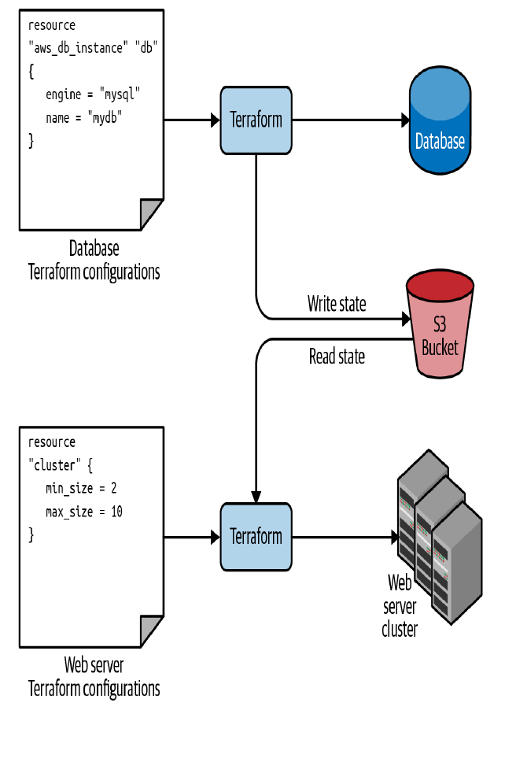
مهم أوي إنك تفهم إن، زي كل الـ data sources في Terraform، الداتا اللي بترجع من terraform_remote_state بتبقى read-only (للقراءة فقط). يعني أي حاجة بتعملها في كود Terraform بتاع الـ web server cluster مستحيل تعدّل في الـ state ده، فتقدر تسحب الداتا بتاعة الـ state بتاع الـ database وانت متطمن ومش هتسبب أي مشاكل في الـ database نفسها.
كل الـ output variables بتاعت الـ database متخزنة في الـ state file، وأنت تقدر تقراها من الـ terraform_remote_state data source باستخدام attribute reference بالشكل ده:
xxxxxxxxxxdata.terraform_remote_state.<NAME>.outputs.<ATTRIBUTE>
كمثال، دي الطريقة اللي ممكن تعمل بيها update للـ User Data بتاع الـ Instances في الـ web server cluster عشان تسحب عنوان وبورت الـ database من الـ terraform_remote_state data source وتعرض المعلومات دي في الـ HTTP response:
xxxxxxxxxxuser_data = <<EOF#!/bin/bashecho "Hello, World" >> index.htmlecho "${data.terraform_remote_state.db.outputs.address}" >> index.htmlecho "${data.terraform_remote_state.db.outputs.port}" >> index.htmlnohup busybox httpd -f -p ${var.server_port} &EOFWarning
خد بالك الله يرضى عليك دا معناها ان global لازم تتنشاء الاول وبعدها Database و بعدها webserver مينفعش تعمل بره الترتيب ده طب السؤال مش كده انا معرض للخطاء البشري ؟ هقولك اه اصبر على الفصل 10 تشوف Terragrunt بتحلها ازاي
بما إن الـ User Data script بقى بيطول، إنك تكتبه inline (جوه الكود مباشرة) بقى بيخلي شكل الكود وحش ومش منظم. بشكل عام، إنك تدمج لغة برمجة (Bash) جوه لغة تانية (Terraform) بيصعّب الـ maintenance بتاعت كل واحدة فيهم، فخلينا نقف هنا لحظة ونطلع الـ Bash script ده في ملف خارجي. عشان نعمل كده، ممكن نستخدم built-in function (دالة مدمجة) اسمها templatefile.
Terraform فيه شوية built-in functions ممكن تشغلها باستخدام expression بالشكل ده:
xxxxxxxxxxfunction_name(...)
كمثال، شوف الـ function اللي اسمها format:
xxxxxxxxxxformat(<FMT>, <ARGS>, ...)
الـ function دي بتعمل format للـ arguments اللي في ARGS حسب الـ syntax بتاع sprintf اللي في الـ string اللي اسمه FMT. أحسن طريقة تجرب بيها الـ built-in functions هي إنك تشغل كوماند terraform console عشان يفتحلك interactive console (شاشة أوامر تفاعلية) تقدر تجرب فيها الـ syntax بتاع Terraform، وتسأل عن الـ state بتاعك، وتشوف النتيجة في ساعتها:
xxxxxxxxxx$ terraform console> format("%.3f", 3.14159265359)3.142
خد بالك إن الـ Terraform console بتبقى read-only، فمتخافش من إنك تغير الـ infrastructure أو الـ state بالغلط.
فيه built-in functions تانية كتير ممكن تستخدمها عشان تتعامل مع الـ strings والأرقام والـ lists والـ maps. واحدة منهم هي الـ templatefile function:
xxxxxxxxxxtemplatefile(<PATH>, <VARS>)
الـ function دي بتقرا الملف اللي في المسار PATH، وبتعمله render كـ template، وبترجع النتيجة كـ string. ولما أقول "بتعمله render كـ template"، قصدي إن الملف اللي في PATH يقدر يستخدم الـ syntax بتاع string interpolation بتاع Terraform اللي هو (${...})، وTerraform هيملى الفراغات دي بالقيم من الـ VARS.
عشان تشوف ده عملي، حط محتويات الـ User Data script في ملف اسمه stage/services/webserver-cluster/user-data.sh بالشكل ده:
xxxxxxxxxxcat > index.html <<EOF<h1>Hello, World</h1><p>DB address: ${db_address}</p><p>DB port: ${db_port}</p>EOFnohup busybox httpd -f -p ${server_port} &لاحظ إن الـ Bash script ده فيه شوية تغييرات عن الأصلي:
هو بيدور على الـ
variablesباستخدام الـsyntaxالعادي بتاعTerraform، بس الفرق إن الـvariablesالوحيدة اللي بيقدر يوصلها هي اللي أنت بتبعتها في الـparameterالتاني بتاعtemplatefile(زي ما هتشوف كمان شوية)، عشان كده مش محتاج تكتب أيprefixقبلها: يعني مثلاً تستخدم${server_port}مش${var.server_port}.الـ
scriptدلوقتي فيه شويةHTML syntax(زي<h1>) عشان يخلي شكل الـoutputأحسن في الـweb browser.
آخر خطوة هي إننا نعمل update للـ parameter اللي اسمه user_data في الـ aws_launch_configuration resource عشان ينادي على الـ templatefile function ويبعتلها الـ variables اللي محتاجها في شكل map:
xxxxxxxxxxresource "aws_launch_configuration" "example" { image_id = "ami-0fb653ca2d3203ac1" instance_type = "t2.micro" security_groups = [aws_security_group.instance.id]
# نعمل Render للـ User Data script كـ template user_data = templatefile("user-data.sh", { server_port = var.server_port db_address = data.terraform_remote_state.db.outputs.address db_port = data.terraform_remote_state.db.outputs.port })
# مطلوب لما بنستخدم launch configuration مع auto scaling group. lifecycle { create_before_destroy = true }}آه، كده شكلها أنضف بكتير من كتابة الـ Bash scripts جوه الكود مباشرة!
لو عملت deploy للـ cluster ده باستخدام terraform apply، واستنيت الـ Instances تسجل نفسها في الـ ALB، وفتحت الـ URL بتاع الـ ALB في الـ web browser، هتشوف حاجة شبه شكل 3-12.
مبروك، الـ web server cluster بتاعك دلوقتي بيقدر يوصل لعنوان وبورت الـ database بشكل programmatically عن طريق Terraform. لو كنت بتستخدم web framework حقيقي (زي Ruby on Rails)، كنت ممكن تحط العنوان والبورت دول كـ environment variables أو تكتبهم في config file عشان الـ database library بتاعتك (زي ActiveRecord) تقدر تستخدمهم وتكلم الـ database
Tip
بص انا عمتله وجربتها تقدر تخش تجربها
انا مش بس استخدامت backend s3 دا انا استخدامت local
global انشاءت منه "../../global/terraform.tfstate بعدها قومت database
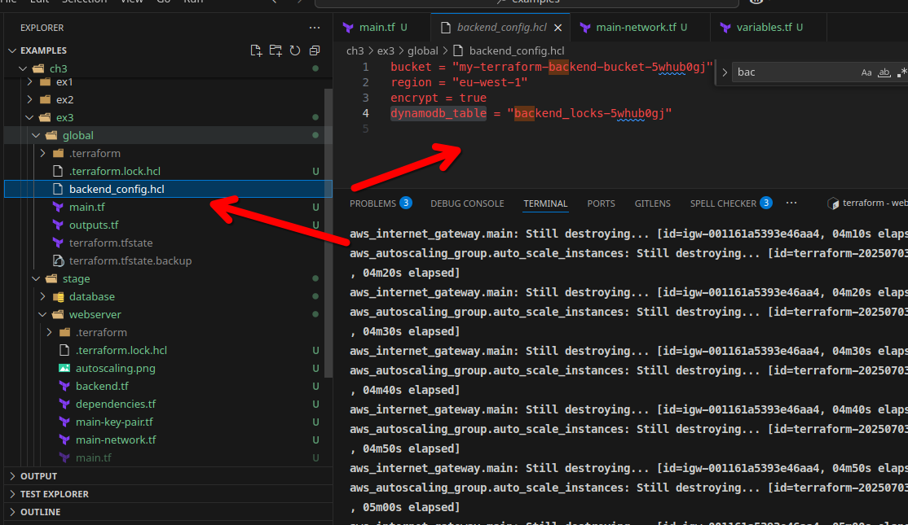
كان لازم امرر الملف ده وانا بعمل terraform init عشان
xxxxxxxxxxterraform init -backend-config=../../global/backend_config.hcl
وبهدها apply وبعدا اروح للـwebserver نفس النظام واشغل نفس امر init وبعدها apply وبعدها انا استخدمة terraform_remote_state مع local عشان اجيب اس s3 واجيب region مش ذكاء مني انا بس بشوف الدنيا شغالة ولا لاء
وبعدها استخدامة terraform_remote_state مع database وهكذا
فى اخطاء فى المثال ده من الكاتب اول حاجة كان المفروض ينشاء حاجة network topology فى فولدر وتكون اول حاجة دا لو افترضنا اننا عيزين الاثنين يتوصلو مع بعض بس مش مشكلة الهدف كان التعليم كده انت فهمت اهمية تقسم المشروع بتاع لـcomponent وشفت العيب ودي الطريقة الاكثر انتشار ولكن بدل ما انا اعد ألف عليهم واحد واحد كده هنا بيجي دور terragrunt عشان يرحمنا من ألف ودورن وتشغل باللك من الاول ومين الثاني
xxxxxxxxxx
data "terraform_remote_state" "global" {backend = "local"config = { path = "../../global/terraform.tfstate"}}
data "terraform_remote_state" "database" {backend = "s3"config = { bucket = data.terraform_remote_state.global.outputs.bucket_name key = "ex3/stage/database/terraform.tfstate" region = data.terraform_remote_state.global.outputs.region}}
resource "aws_launch_template" "template_instance" {name_prefix = "my-launch-template-"image_id = data.aws_ami.linux_ami.idinstance_type = "t2.micro"key_name = aws_key_pair.ec2_key_pair.key_namevpc_security_group_ids = [aws_security_group.allow_ssh_http_ec2.id]
user_data = base64encode(<<-EOF#!/bin/bashyum update -yyum install -y httpdsystemctl enable httpdsystemctl start httpd
# We are using a 'Here Document' to write a full HTML file easilycat > /var/www/html/index.html <<EOT<!DOCTYPE html><html lang="en"><head> <meta charset="UTF-8"> <title>Terraform Deployed Server</title> <style> body { font-family: Arial, sans-serif; text-align: center; margin-top: 50px; } div { border: 1px solid #ccc; padding: 20px; display: inline-block; } </style></head><body> <div> <h1>Hello from a full Apache (httpd) Server!</h1> <hr> <h2>Database Connection Info:</h2> <p><b>Address:</b> ${data.terraform_remote_state.database.outputs.address}</p> <p><b>Port:</b> ${data.terraform_remote_state.database.outputs.port}</p> </div></body></html>EOTEOF)lifecycle { create_before_destroy = true}}
تقدر تجرب https://github.com/taha2samy/examples هتلاقيه في ch3 في اخر مثال ex3 وعيش
انا عمتلها مجرد apache server وبعرض عليها واشتغلت 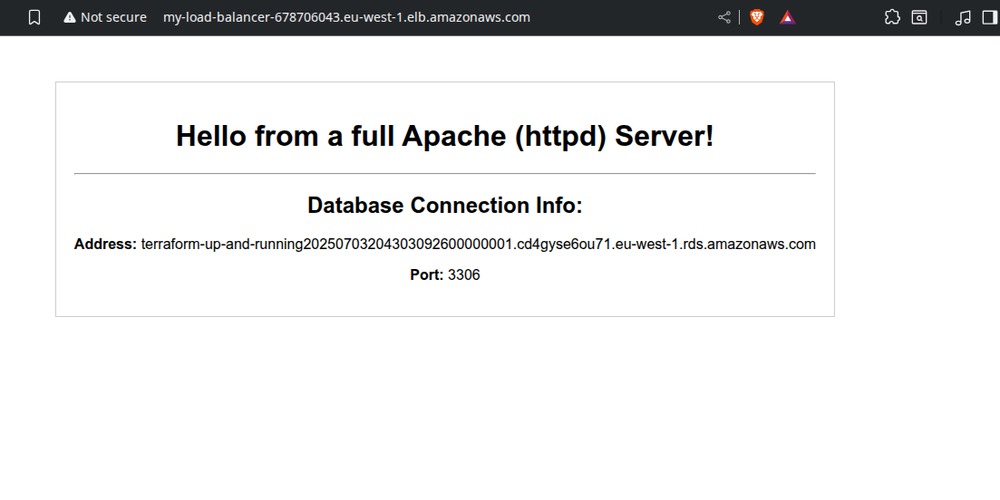
2. "مشكلة البيضة والفرخة" ليها حلول تانية غير الشغل اليدوي (للمستقبل)
Tip
إزاي نعمل S3 Bucket من غير ما نقع في دوامة ؟
الفصل شرح طريقة يدوية من خطوتين عشان تعمل الـ S3 Bucket اللي هتخزن فيه الـ state. دي طريقة شغالة، بس في بيئة شغل حقيقية، أي حاجة يدوية معرضة للغلط.
هل فيه طرق تانية؟ آه، بس متقدمة شوية:
استخدام
AWS CLIفيscript: ممكن تعملbootstrap scriptصغير باستخدام الـAWS CLIوظيفته الوحيدة إنه يعملcreateللـS3 BucketوالـDynamoDB table. الـscriptده بتشغله مرة واحدة بس في حياة الـAWS Accountكله، وبعدها كل شغلTerraformبيستخدم الـbucketده. ده بيوحد الطريقة وبيقلل الغلط اليدوي.استخدام حساب
AWSتاني (الـChicken and Egg Account): في الشركات الكبيرة، بيبقى فيهAWS Accountمركزي ومخصص بس للـDevOps tools. ممكن تستخدمTerraformمن الحساب ده (اللي الـstateبتاعهlocal) عشان تعملcreateللـS3 Bucketsفي كل الحسابات التانية (staging,production). أنت كده بتستخدمTerraformعشان يجهزTerraform!Terraform CloudأوEnterprise: دي خدمات منHashiCorpنفسها بتحللك المشكلة دي من أساسها. هي بتتكفل بموضوع تخزين الـstateوالـlockingمن غير ما تحتاج تعملS3 Bucketبنفسك.
الفكرة هنا مش إنك تستخدم الطرق دي دلوقتي، بس مهم تعرف إن "المشكلة" اللي واجهناها دي ليها حلول automated واحترافية، وإن الشغل اليدوي ده مجرد خطوة أولى للتعلم.
Warning
مشكلة الـ Tight Coupling مع terraform_remote_state
إحنا اتفقنا إن أفضل طريقة ننظم بيها شغلنا هي إننا نقسم الـ infrastructure بتاعتنا لـ components منفصلة. فبقى عندنا فولدرين:
database/: ده الفولدر اللي فيه كودTerraformاللي بيبني الـdatabaseبتاعتنا.web-app/: ده الفولدر اللي فيه كودTerraformاللي بيبني الـserversبتاعة الأبلكيشن.
المشكلة اللي قابلتنا: الـ web-app محتاج يعرف عنوان (الـ address) والـ port بتاع الـ database عشان يعرف يكلمها.
الحل السريع اللي استخدمناه: استخدمنا data source اسمه terraform_remote_state.
الكارثة بتحصل إمتى؟ (The Breakage Scenario)
تخيل إنك شغال في فريق، والفريق ده متقسم لفريقين صغيرين:
فريق الداتا: مسئول عن فولدر
database/.فريق الأبلكيشن: مسئول عن فولدر
web-app/.
في يوم من الأيام، "فريق الداتا" قرر يعمل refactor للكود بتاعه. بصوا على الـ output اللي اسمه address وقالوا: "الاسم ده مش واضح كفاية، خلينا نغيره لاسم أدق".
فقاموا بالتعديل البسيط ده في الكود بتاعهم:
xxxxxxxxxx// Beforeoutput "address" { value = aws_db_instance.example.address}
// Afteroutput "db_endpoint" { value = aws_db_instance.example.address}بعد ما غيروا الكود، عملوا terraform apply. بالنسبة لهم، كل حاجة اشتغلت تمام 100% لأنهم غيروا اسم الـ output بس، والكود بتاعهم مش بيستخدمه في أي حتة تانية.
هنا بقى بتحصل المشكلة عندك أنت في "فريق الأبلكيشن".
أنت متعرفش أي حاجة عن التغيير اللي حصل ده. جيت تاني يوم عايز تعمل تعديل صغير في الـ web-app بتاعك. شغلت terraform plan.
Terraform بيلاقي إن الـ output اللي اسمه address اللي أنت بتحاول تقراه مبقاش موجود في الـ remote state بتاع الداتا بيز.
BOOM! Terraform بيوقف كل حاجة وبيطلعلك Error في وشك.
تحليل المشكلة: The Brittle Contract
المشكلة هنا مش إن الـ components بتتكلم مع بعض. المشكلة هي طريقة الكلام.
باستخدام terraform_remote_state، أنت خليت الـ web-app يعتمد على تفصيلة داخلية جداً في كود الـ database (وهي اسم متغير الـ output). أنت بكده عملت بينهم Tight Coupling.
الـ API Contract (أو الـ Interface) اللي بينهم بقى ضعيف وهش جداً. الـ Contract ده كان بيقول بشكل ضمني (implicitly): "أنا كـ web-app متوقع إنك كـ database لازم تديني output اسمه address". أي تغيير في الاسم ده بيكسر الـ Contract، وبالتالي بيكسر السيستم كله.
الحل الأفضل: إزاي نعمل Decoupling باستخدام وسيط
الحل إننا نخليهم يتكلموا مع بعض عن طريق وسيط محايد ومستقر. الـ Contract ميبقاش على تفاصيل داخلية، الـ Contract يبقى على اسم مكان عام بيحطوا فيه المعلومة وبيقروا منه.
الحل هو استخدام AWS Systems Manager Parameter Store كـ Service Discovery mechanism:
الخطوة 1: تعديل كود "فريق الداتا" (الـ Producer)
فريق الداتا، بالإضافة إنه بيعمل output (وده شيء كويس كـ Best Practice)، هيضيف resource جديد وظيفته "ينشر" (Publish) العنوان ده في مكان مركزي ومعروف للكل.
xxxxxxxxxx# في ملف database/main.tf
resource "aws_db_instance" "example" { # ...}
# الجزء الجديد: بننشر المعلومة في مكان عامresource "aws_ssm_parameter" "db_endpoint" { name = "/my-app/stage/db/endpoint" # <-- ده "العنوان" المتفق عليه، ده الـ Contract الجديد type = "String" value = aws_db_instance.example.address}إيه اللي حصل؟ دلوقتي الـ database component بعد ما بيخلص شغله، بيروح يكتب العنوان بتاعه في Parameter Store تحت اسم /my-app/stage/db/endpoint. ده بقى الـ Contract الجديد والرسمي. فريق الداتا يقدر يغير أسماء الـ outputs بتاعته 100 مرة براحته، طالما هو ملتزم إنه يحط القيمة الصح في الـ parameter ده.
الخطوة 2: تعديل كود "فريق الأبلكيشن" (الـ Consumer)
أنت بقى هتمسح الـ data "terraform_remote_state" خالص من عندك، وهتستبدله بـ data source جديد بيقرأ من الـ Parameter Store.
xxxxxxxxxx# في ملف web-app/main.tf (بعد التعديل)
# هنا بنقرأ من المكان المركزي (بنستهلك المعلومة)data "aws_ssm_parameter" "db_endpoint" { name = "/my-app/stage/db/endpoint" # <-- بنستخدم نفس "العنوان" المتفق عليه}
# وبعدين بنستخدمه كدهresource "some_resource" "app_server" { # ... db_connection_string = data.aws_ssm_parameter.db_endpoint.value}النتيجة النهائية:
الكود بتاعك مبقاش يعرف أي حاجة عن الـ state file بتاع الداتابيز ولا أسماء الـ outputs اللي جواه. كل اللي هو يعرفه إنه يروح يقرأ قيمة من مكان عام ومتفق عليه. الـ components بقت decoupled.
كل واحد فيهم يقدر يتغير ويتطور داخليًا براحته، طالما هما ملتزمين بالـ API Contract الواضح والمستقر اللي بينهم (وهو اسم الـ parameter في Parameter Store). ده بيخلي النظام كله أقوى وأكثر قابلية للصيانة والتطوير (maintainable و scalable) على المدى الطويل.
شرحك ده يوضح إنك فاهم المشكلة بعمق. الطريقة دي في التفكير هي اللي بتفرق بين واحد بيكتب كود Terraform وواحد بيبني infrastructure قوية ومستقرة (robust and maintainable).
Note
Terraform بيثق في الـ State بتاعه أكتر ما بيثق في AWS!
دي نقطة فلسفية بس مهمة جدًا عشان تفهم Terraform بيفكر إزاي. تخيل السيناريو ده:
أنت عملت
EC2 instanceبـTerraform. الـstate fileسجل إن الـinstanceدي موجودة بالـIDالفلاني.زميلك دخل على الـ
AWS Consoleبإيده ومسح الـinstanceدي من غير ما يقولك.أنت جيت تعمل
terraform plan.
تفتكر إيه اللي هيحصل؟
أول حاجة Terraform هيعملها هي عملية الـ refresh. هيبص في الـ state file بتاعه، هيلاقي ID بتاع instance. هيروح يكلم AWS ويسألها عن الـ ID ده. AWS هتقوله "الـ ID ده مش موجود!".
هنا، Terraform بيفهم إن فيه حاجة غلط. بيفهم إن الواقع اتغير من وراه. ده اسمه State Drift.
الـ plan اللي هيطلعهولك هيبقى: "أنا شايف في الكود إنك عايز instance، وببص في الواقع مش لاقيها (مع إنها كانت متسجلة عندي في الـ State)، يبقى أنا هعملها create من جديد".
الفكرة هنا إن Terraform بيعتبر إن الكود هو الـ Single Source of Truth، ويعتبر الـ State هو آخر حالة معروفة، ومهمته إنه يخلي الواقع يتطابق مع الكود. لو الواقع انحرف، هو بيصلحه.
لما تكتشف إن الـ State بتاعك "انحرف" او Drift، أنت قدام مفترق طرق.
لا توافق على الـ plan وأنت مغمض. اقف وفكر. اسأل نفسك: "هل التغيير اللي حصل في الواقع ده غلطة ولا مقصود؟". بناءً على إجابتك، هتختار أحد المسارين التاليين:
المسار الأول (الأكتر شيوعًا):Applying the Desired State from Code
الفكرة: الكود هو الـ Single Source of Truth. الواقع الحالي به خطأ، ويجب تصحيحه.
امتى تستخدمه؟ لو كان التغيير اليدوي ده غلطة أو مش مقصود (زي حذف سيرفر بالصدفة، أو تعديل قاعدة في
Security Groupيدويًا، أو حتى نتيجةbugنادر فيAWS).بتعمل إيه؟ (الأوامر):
terraform plan: راجع الـplanبعينك كويس عشان تتأكد إنه هيصلح الانحراف ويرجع السيستم للحالة المطلوبة.terraform apply: لو الـplanتمام، نفذه.Terraformهيصلح الـdrift، وبعدها هيحدّث الـStateبتاعه أوتوماتيك.
المسار التاني (للحالات الخطيرة): تحديث الـ State عشان يعكس الواقع الجديد
الفكرة: الواقع الحالي هو الصحيح دلوقتي. لازم نحدّث الكود والـ State عشان يبقوا زيه.
امتى تستخدمه؟ لو كان التغيير اليدوي مقصود وضروري (زي عمل
scale upلـdatabaseبسرعة من الـConsoleعشان تواجه ضغط طارئ). لو عملتapplyعلى طول،Terraformهيروح يصغر الـdatabaseتاني، ودي هتبقى كارثة.بتعمل إيه؟ (الأوامر):
عدّل الكود الأول (الحل الأبسط): روح بنفسك على ملفات
.tfوعدّل الـresourceعشان يبقى زي اللي في الواقع (مثلاً، غيّر قيمة الـinstance_typeفي الكود). لما تعملplanبعدها،Terraformمش هيلاقي أي اختلاف.استخدم
terraform import: لو حد عملresourceجديد خالص بإيده، استخدم الأمر ده عشان تخليTerraformيضيفه للـStateبتاعه من غير ما يمسحه.xxxxxxxxxxterraform import aws_instance.my_new_instance i-1234567890abcdef0استخدم
terraform state(للحالات المتقدمة): دي أدوات متقدمة عشان تعدل في الـStateمباشرة (زي إنك تغير اسمresourceجوه الـState).
xxxxxxxxxxterraform state mv 'aws_instance.old_name' 'aws_instance.new_name'
القاعدة الذهبية في الشغل مع Terraform هي: محدش يغير أي resource معمول بـ Terraform بإيده من الـ Console! كل التغييرات لازم تتم عن طريق تعديل الكود وعمل apply. ده بيضمن إن الـ State يفضل دايمًا انعكاس دقيق للـ infrastructure، وإن الكود هو فعلًا الـ Single Source of Truth.